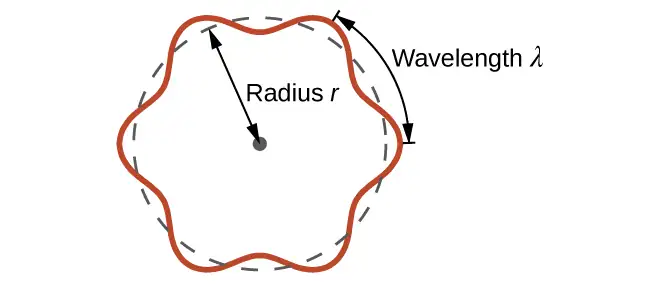
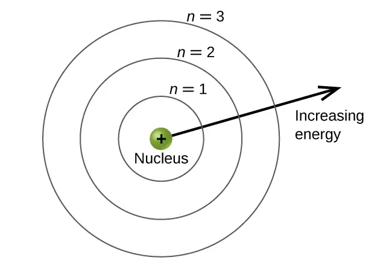
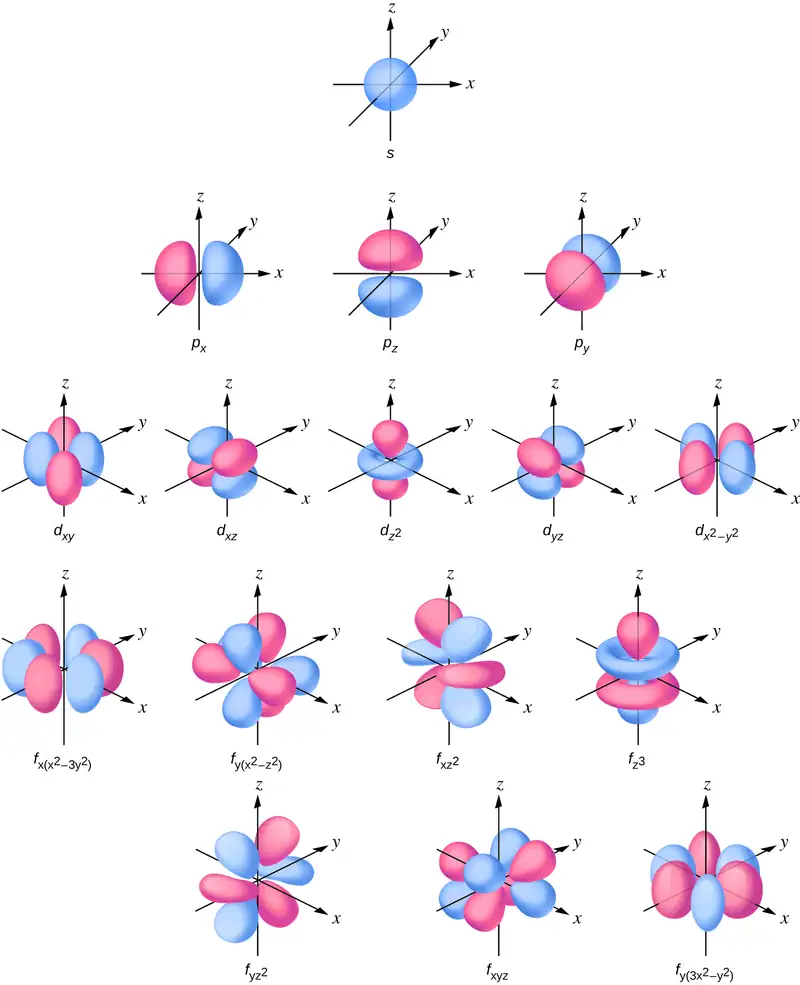
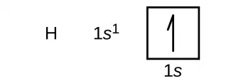
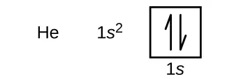
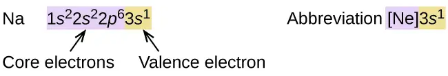
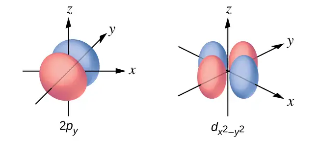
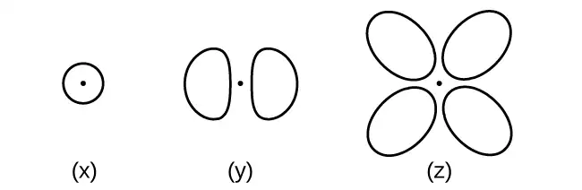

Chapter 6: Electronic Structure and Periodic Properties of Elements¶
Introduction¶
Learning Objectives
- Electromagnetic Energy
- The Bohr Model
- Development of Quantum Theory
- Electronic Structure of Atoms (Electron Configurations)
- Periodic Variations in Element Properties
In 1054, Chinese astronomers recorded the appearance of a “guest star” in the sky, visible even during the day, which then disappeared slowly over the next two years. The sudden appearance was due to a supernova explosion, which was much brighter than the original star. Even though this supernova was observed almost a millennium ago, the remaining Crab Nebula (Figure 6.1) continues to release energy today. It emits not only visible light but also infrared light, X-rays, and other forms of electromagnetic radiation. The nebula emits both continuous spectra (the blue-white glow) and atomic emission spectra (the colored filaments). In this chapter, we will discuss light and other forms of electromagnetic radiation and how they are related to the electronic structure of atoms. We will also see how this radiation can be used to identify elements, even from thousands of light years away.
6.1 Electromagnetic Energy¶
Learning Objectives
By the end of this section, you will be able to:
- Explain the basic behavior of waves, including travelling waves and standing waves
- Describe the wave nature of light
- Use appropriate equations to calculate related light-wave properties such as frequency, wavelength, and energy
- Distinguish between line and continuous emission spectra
- Describe the particle nature of light
The nature of light has been a subject of inquiry since antiquity. In the seventeenth century, Isaac Newton performed experiments with lenses and prisms and was able to demonstrate that white light consists of the individual colors of the rainbow combined together. Newton explained his optics findings in terms of a "corpuscular" view of light, in which light was composed of streams of extremely tiny particles travelling at high speeds according to Newton's laws of motion. Others in the seventeenth century, such as Christiaan Huygens, had shown that optical phenomena such as reflection and refraction could be equally well explained in terms of light as waves travelling at high speed through a medium called "luminiferous aether" that was thought to permeate all space. Early in the nineteenth century, Thomas Young demonstrated that light passing through narrow, closely spaced slits produced interference patterns that could not be explained in terms of Newtonian particles but could be easily explained in terms of waves. Later in the nineteenth century, after James Clerk Maxwell developed his theory of electromagnetic radiation and showed that light was the visible part of a vast spectrum of electromagnetic waves, the particle view of light became thoroughly discredited. By the end of the nineteenth century, scientists viewed the physical universe as roughly comprising two separate domains: matter composed of particles moving according to Newton's laws of motion, and electromagnetic radiation consisting of waves governed by Maxwell's equations. Today, these domains are referred to as classical mechanics and classical electrodynamics (or classical electromagnetism). Although there were a few physical phenomena that could not be explained within this framework, scientists at that time were so confident of the overall soundness of this framework that they viewed these aberrations as puzzling paradoxes that would ultimately be resolved somehow within this framework. As we shall see, these paradoxes led to a contemporary framework that intimately connects particles and waves at a fundamental level called wave-particle duality, which has superseded the classical view.
Visible light and other forms of electromagnetic radiation play important roles in chemistry, since they can be used to infer the energies of electrons within atoms and molecules. Much of modern technology is based on electromagnetic radiation. For example, radio waves from a mobile phone, X-rays used by dentists, the energy used to cook food in your microwave, the radiant heat from red-hot objects, and the light from your television screen are forms of electromagnetic radiation that all exhibit wavelike behavior.
Waves¶
A wave is an oscillation or periodic movement that can transport energy from one point in space to another. Common examples of waves are all around us. Shaking the end of a rope transfers energy from your hand to the other end of the rope, dropping a pebble into a pond causes waves to ripple outward along the water's surface, and the expansion of air that accompanies a lightning strike generates sound waves (thunder) that can travel outward for several miles. In each of these cases, kinetic energy is transferred through matter (the rope, water, or air) while the matter remains essentially in place. An insightful example of a wave occurs in sports stadiums when fans in a narrow region of seats rise simultaneously and stand with their arms raised up for a few seconds before sitting down again while the fans in neighboring sections likewise stand up and sit down in sequence. While this wave can quickly encircle a large stadium in a few seconds, none of the fans actually travel with the wave-they all stay in or above their seats.
Waves need not be restricted to travel through matter. As Maxwell showed, electromagnetic waves consist of an electric field oscillating in step with a perpendicular magnetic field, both of which are perpendicular to the direction of travel. These waves can travel through a vacuum at a constant speed of 2.998 \(\times\) 108 m/s, the speed of light (denoted by c).
All waves, including forms of electromagnetic radiation, are characterized by, a wavelength (denoted by λ, the lowercase Greek letter lambda), a frequency (denoted by ν, the lowercase Greek letter nu), and an amplitude. As can be seen in Figure 6.2, the wavelength is the distance between two consecutive peaks or troughs in a wave (measured in meters in the SI system). Electromagnetic waves have wavelengths that fall within an enormous range-wavelengths of kilometers (103 m) to picometers (10−12 m) have been observed. The frequency is the number of wave cycles that pass a specified point in space in a specified amount of time (in the SI system, this is measured in seconds). A cycle corresponds to one complete wavelength. The unit for frequency, expressed as cycles per second [s−1], is the hertz (Hz). Common multiples of this unit are megahertz, (1 MHz = 1 \(\times\) 106 Hz) and gigahertz (1 GHz = 1 \(\times\) 109 Hz). The amplitude corresponds to the magnitude of the wave's displacement and so, in Figure 6.2, this corresponds to one-half the height between the peaks and troughs. The amplitude is related to the intensity of the wave, which for light is the brightness, and for sound is the loudness.
![This figure includes 5 one-dimensional sinusoidal waves in two columns. The column on the left includes three waves, and the column on the right includes two waves. In each column, dashed vertical line segments extend down the left and right sides of the column. A right pointing arrow extends from the left dashed line to the right dashed line in both columns and is labeled, “Distance traveled in 1 second.” The waves all begin on the left side at a crest. The wave at the upper left shows 3 peaks to the right of the starting point. A bracket labeled, “lambda subscript 1,” extends upward from the second and third peaks. Beneath this wave is the label, “nu subscript 1 equals 4 cycles per second equals 3 hertz.” The wave below has six peaks to the right of the starting point with a bracket similarly connecting the third and fourth peaks which is labeled, “lambda subscript 2.” Beneath this wave is the label, “nu subscript 2 equals 8 cycles per second equals 6 hertz” The third wave in the column has twelve peaks to the right of the starting point with a bracket similarly connecting the seventh and eighth peaks which is labeled, “lambda subscript 3.” Beneath this wave is the label, “nu subscript 3 equals 12 cycles per second equals 12 hertz.” All waves in this column appear to have the same vertical distance from peak to trough. In the second column, the two waves are similarly shown, but lack the lambda labels. The top wave in this column has a greater vertical distance between the peaks and troughs and is labeled, “Higher amplitude.” The wave beneath it has a lesser distance between the peaks and troughs and is labeled, “Lower amplitude.”](img/cnx-chem-06-01-frequency.webp)
The product of a wave's wavelength (λ) and its frequency (ν), λν, is the speed of the wave. Thus, for electromagnetic radiation in a vacuum, speed is equal to the fundamental constant, c:
Wavelength and frequency are inversely proportional: As the wavelength increases, the frequency decreases. The inverse proportionality is illustrated in Figure 6.3. This figure also shows the electromagnetic spectrum, the range of all types of electromagnetic radiation. Each of the various colors of visible light has specific frequencies and wavelengths associated with them, and you can see that visible light makes up only a small portion of the electromagnetic spectrum. Because the technologies developed to work in various parts of the electromagnetic spectrum are different, for reasons of convenience and historical legacies, different units are typically used for different parts of the spectrum. For example, radio waves are usually specified as frequencies (typically in units of MHz), while the visible region is usually specified in wavelengths (typically in units of nm or angstroms).
![The figure includes a portion of the electromagnetic spectrum which extends from gamma radiation at the far left through x-ray, ultraviolet, visible, infrared, terahertz, and microwave to broadcast and wireless radio at the far right. At the top of the figure, inside a grey box, are three arrows. The first points left and is labeled, “Increasing energy E.” A second arrow is placed just below the first which also points left and is labeled, “Increasing frequency nu.” A third arrow is placed just below which points right and is labeled, “Increasing wavelength lambda.” Inside the grey box near the bottom is a blue sinusoidal wave pattern that moves horizontally through the box. At the far left end, the waves are short and tightly packed. They gradually lengthen moving left to right across the figure, resulting in significantly longer waves at the right end of the diagram. Beneath the grey box are a variety of photos aligned above the names of the radiation types and a numerical scale that is labeled, “Wavelength lambda ( m ).” This scale runs from 10 superscript negative 12 meters under gamma radiation increasing by powers of ten to a value of 10 superscript 3 meters at the far right under broadcast and wireless radio. X-ray appears around 10 superscript negative 10 meters, ultraviolet appears in the 10 superscript negative 8 to 10 superscript negative 7 range, visible light appears between 10 superscript negative 7 and 10 superscript negative 6, infrared appears in the 10 superscript negative 6 to 10 superscript negative 5 range, teraherz appears in the 10 superscript negative 4 to 10 superscript negative 3 range, microwave infrared appears in the 10 superscript negative 2 to 10 superscript negative 1 range, and broadcast and wireless radio extend from 10 to 10 superscript 3 meters. Labels above the scale are placed to indicate 1 n m at 10 superscript negative 9 meters, 1 micron at 10 superscript negative 6 meters, 1 millimeter at 10 superscript negative 3 meters, 1 centimeter at 10 superscript negative 2 meters, and 1 foot between 10 superscript negative 1 meter and 10 superscript 0 meters. A variety of images are placed beneath the grey box and above the scale in the figure to provide examples of related applications that use the electromagnetic radiation in the range of the scale beneath each image. The photos on the left above gamma radiation show cosmic rays and a multicolor PET scan image of a brain. A black and white x-ray image of a hand appears above x-rays. An image of a patient undergoing dental work, with a blue light being directed into the patient's mouth is labeled, “dental curing,” and is shown above ultraviolet radiation. Between the ultraviolet and infrared labels is a narrow band of violet, indigo, blue, green, yellow, orange, and red colors in narrow, vertical strips. From this narrow band, two dashed lines extend a short distance above to the left and right of an image of the visible spectrum. The image, which is labeled, “visible light,” is just a broader version of the narrow bands of color in the label area. Above infrared are images of a television remote and a black and green night vision image. At the left end of the microwave region, a satellite radar image is shown. Just right of this and still above the microwave region are images of a cell phone, a wireless router that is labeled, “wireless data,” and a microwave oven. Above broadcast and wireless radio are two images. The left most image is a black and white medical ultrasound image. A wireless AM radio is positioned at the far right in the image, also above broadcast and wireless radio.](img/cnx-chem-06-01-emspectrum.webp)
Example 6.1 Determining the Frequency and Wavelength of Radiation
A sodium streetlight gives off yellow light that has a wavelength of 589 nm (1 nm = 1 \(\times\) 10−9 m). What is the frequency of this light?
Solution
We can rearrange the equation c = λν to solve for the frequency:
Since c is expressed in meters per second, we must also convert 589 nm to meters.
Check Your Learning
One of the frequencies used to transmit and receive cellular telephone signals in the United States is 850 MHz. What is the wavelength in meters of these radio waves?
Answer:
0.353 m = 35.3 cm
Chemistry in Everyday Life: Wireless Communication
Many valuable technologies operate in the radio (3 kHz-300 GHz) frequency region of the electromagnetic spectrum. At the low frequency (low energy, long wavelength) end of this region are AM (amplitude modulation) radio signals (540-2830 kHz) that can travel long distances. FM (frequency modulation) radio signals are used at higher frequencies (87.5-108.0 MHz). In AM radio, the information is transmitted by varying the amplitude of the wave (Figure 6.5). In FM radio, by contrast, the amplitude is constant and the instantaneous frequency varies.
![This figure shows 3 wave diagrams. The first wave diagram is in black and shows two crests, indicates a consistent distance from peak to trough, and has one trough in its span across the page. The label, “Signal,” appears to the right. Just below this, a wave diagram is shown in red. The wave includes sixteen crests, but the distance from the peaks to troughs of consecutive waves varies moving across the page. The peak to trough distance is greatest in the region below the peaks of the black wave diagram, and the distance from peak to trough is similarly least below the trough of the black wave diagram. This red wave diagram is labeled, “A M.” The third wave diagram is shown in blue. The distance from peak to trough of consecutive waves is constant across the page, but the peaks and troughs are more closely packed in the region below the peaks of the black wave diagram at the top of the figure. The peaks and troughs are relatively widely spaced below the trough region of the black wave diagram. This blue wave diagram is labeled “F M.”](img/cnx-chem-06-01-amfm.webp)
Other technologies also operate in the radio-wave portion of the electromagnetic spectrum. For example, 4G cellular telephone signals are approximately 880 MHz, while Global Positioning System (GPS) signals operate at 1.228 and 1.575 GHz, local area wireless technology (Wi-Fi) networks operate at 2.4 to 5 GHz, and highway toll sensors operate at 5.8 GHz. The frequencies associated with these applications are convenient because such waves tend not to be absorbed much by common building materials.
One particularly characteristic phenomenon of waves results when two or more waves come into contact: They interfere with each other. Figure 6.6 shows the interference patterns that arise when light passes through narrow slits closely spaced about a wavelength apart. The fringe patterns produced depend on the wavelength, with the fringes being more closely spaced for shorter wavelength light passing through a given set of slits. When the light passes through the two slits, each slit effectively acts as a new source, resulting in two closely spaced waves coming into contact at the detector (the camera in this case). The dark regions in Figure 6.6 correspond to regions where the peaks for the wave from one slit happen to coincide with the troughs for the wave from the other slit (destructive interference), while the brightest regions correspond to the regions where the peaks for the two waves (or their two troughs) happen to coincide (constructive interference). Likewise, when two stones are tossed close together into a pond, interference patterns are visible in the interactions between the waves produced by the stones. Such interference patterns cannot be explained by particles moving according to the laws of classical mechanics.
Portrait of a Chemist: Dorothy Crowfoot Hodgkin
X-rays exhibit wavelengths of approximately 0.01–10 nm. Since these wavelengths are comparable to the spaces between atoms in a crystalline solid, X-rays are scattered when they pass through crystals. The scattered rays undergo constructive and destructive interference that creates a specific diffraction pattern that may be measured and used to precisely determine the positions of atoms within the crystal. This phenomenon of X-ray diffraction is the basis for very powerful techniques enabling the determination of molecular structure. One of the pioneers who applied this powerful technology to important biochemical substances was Dorothy Crowfoot Hodgkin.
Born in Cairo, Egypt, in 1910 to British parents, Dorothy’s fascination with chemistry was fostered early in her life. At age 11 she was enrolled in a prestigious English grammar school where she was one of just two girls allowed to study chemistry. On her 16th birthday, her mother, Molly, gifted her a book on X-ray crystallography, which had a profound impact on the trajectory of her career. She studied chemistry at Oxford University, graduating with first-class honors in 1932 and directly entering Cambridge University to pursue a doctoral degree. At Cambridge, Dorothy recognized the promise of X-ray crystallography for protein structure determinations, conducting research that earned her a PhD in 1937. Over the course of a very productive career, Dr. Hodgkin was credited with determining structures for several important biomolecules, including cholesterol iodide, penicillin, and vitamin B12. In recognition of her achievements in the use of X-ray techniques to elucidate the structures of biochemical substances, she was awarded the 1964 Nobel Prize in Chemistry. In 1969, she led a team of scientists who deduced the structure of insulin, facilitating the mass production of this hormone and greatly advancing the treatment of diabetic patients worldwide. Dr. Hodgkin continued working with the international scientific community, earning numerous distinctions and awards prior to her death in 1993.
Not all waves are travelling waves. Standing waves (also known as stationary waves) remain constrained within some region of space. As we shall see, standing waves play an important role in our understanding of the electronic structure of atoms and molecules. The simplest example of a standing wave is a one-dimensional wave associated with a vibrating string that is held fixed at its two end points. Figure 6.7 shows the four lowest-energy standing waves (the fundamental wave and the lowest three harmonics) for a vibrating string at a particular amplitude. Although the string's motion lies mostly within a plane, the wave itself is considered to be one dimensional, since it lies along the length of the string. The motion of string segments in a direction perpendicular to the string length generates the waves and so the amplitude of the waves is visible as the maximum displacement of the curves seen in Figure 6.7. The key observation from the figure is that only those waves having an integer number, n, of half-wavelengths between the end points can form. A system with fixed end points such as this restricts the number and type of the possible waveforms. This is an example of quantization, in which only discrete values from a more general set of continuous values of some property are observed. Another important observation is that the harmonic waves (those waves displaying more than one-half wavelength) all have one or more points between the two end points that are not in motion. These special points are nodes. The energies of the standing waves with a given amplitude in a vibrating string increase with the number of half-wavelengths n. Since the number of nodes is n – 1, the energy can also be said to depend on the number of nodes, generally increasing as the number of nodes increases.
![This figure shows four one-dimensional standing waves. The waves are shown in a tan color and are composed of curves to represent standing waves that can be generated using string. The first image at the top of the figure shows a single long wave with no nodes, or points where the string appears to cross between the endpoints at the left and right sides of the figure. The second diagram just below shows a single node at the center of the wave, which divides the wave into two identical halves to the left and right. The third diagram shows two nodes, dividing the image into three identical parts to the left, center, and right. Similarly, the last image at the bottom of the figure shows three nodes, dividing the image into four identical parts.](img/cnx-chem-06-01-vibrstring.webp)
An example of two-dimensional standing waves is shown in Figure 6.8, which shows the vibrational patterns on a flat surface. Although the vibrational amplitudes cannot be seen like they could in the vibrating string, the nodes have been made visible by sprinkling the drum surface with a powder that collects on the areas of the surface that have minimal displacement. For one-dimensional standing waves, the nodes were points on the line, but for two-dimensional standing waves, the nodes are lines on the surface (for three-dimensional standing waves, the nodes are two-dimensional surfaces within the three-dimensional volume).
![This figure includes four images. In each image, a brown circular platform has been sprinkled with a tan powder, yellow wires connect to a cylindrical base beneath the platform. To the right of the platform is a white box with a blue front which is labeled, “5.289 k H z Function Generator.” The image in the top left shows three distinct rings formed from the tan powder evenly spaced from the center of the platform, with the first ring very close to the center of the platform. The box reads, “2.434 k H z.” The image in the top right is similar except that the rings are closer together and the central ring has a significantly greater radius than in the first diagram. In this photo, the box reads, “3.986 k H z.” The image at the lower left is similar to the image in the upper left except that more of the powder is present, and 8 evenly-spaced radii are formed from the tan powder on the platform, making a web-like image. In this photo, the box reads, “5.289 k H z.” In the lower right of the figure, the image is similar to what is shown in the upper right except that four evenly spaced radii are shown composed of the tan powder on the platform. In this photo, the box reads, “5.670 K H z.”](img/cnx-chem-06-01-vibratdrum.webp)
Link to Learning
You can watch the formation of various radial nodes here as singer Imogen Heap projects her voice across a kettle drum.
Blackbody Radiation and the Ultraviolet Catastrophe¶
The last few decades of the nineteenth century witnessed intense research activity in commercializing newly discovered electric lighting. This required obtaining a better understanding of the distributions of light emitted from various sources being considered. Artificial lighting is usually designed to mimic natural sunlight within the limitations of the underlying technology. Such lighting consists of a range of broadly distributed frequencies that form a continuous spectrum. Figure 6.9 shows the wavelength distribution for sunlight. The most intense radiation is in the visible region, with the intensity dropping off rapidly for shorter wavelength ultraviolet (UV) light, and more slowly for longer wavelength infrared (IR) light.
![A graph is shown with a horizontal axis labeled, “Wavelength ( n m ),” and a vertical axis labeled, “Spectral irradiance ( W divided by m superscript 2 divided by n m ).” The horizontal axis begins at 250 and extends to 4000 with markings provided every 250 n m. Similarly, the vertical axis begins at 0.00 and extends to 2.00 with markings every 0.25 units. Two vertical dashed lines are drawn. The first appears at about 400 nanometers and the second at nearly 700 nanometers. To the left of the first of these lines, the label, “U V,” appears at the top of the graph. Between these lines, the label, “Visible,” appears at the top of the graph. To the right of the second of these lines, the label, “Infrared,” appears at the top of the graph. A grey curve begins on the vertical axis at about 0.10. This curve increases steeply to a maximum value between the two vertical line segments of approximately 1.75 at about 625 nanometers. This curve decreases rapidly at first, then tapers off to reach a value of about 0 at the far right end of the graph. A golden colored curve traces along the same path as the grey curve, but shows a significant degree of variation in the region of the peak of the graph. In this general region, the gold curve is jagged and somewhat erratic. This curve reaches a maximum over 2.00 at around 475 nanometers. A key provided in the open space of the graph shows that the gold graph represents sunlight at the top of the atmosphere, and the grey curve represents the 5250 degrees C Blackbody spectrum.](img/cnx-chem-06-01-solardist.webp)
In Figure 6.9, the solar distribution is compared to a representative distribution, called a blackbody spectrum, that corresponds to a temperature of 5250 °C. The blackbody spectrum matches the solar spectrum quite well. A blackbody is a convenient, ideal emitter that approximates the behavior of many materials when heated. It is “ideal” in the same sense that an ideal gas is a convenient, simple representation of real gases that works well, provided that the pressure is not too high nor the temperature too low. A good approximation of a blackbody that can be used to observe blackbody radiation is a metal oven that can be heated to very high temperatures. The oven has a small hole allowing for the light being emitted within the oven to be observed with a spectrometer so that the wavelengths and their intensities can be measured. Figure 6.10 shows the resulting curves for some representative temperatures. Each distribution depends only on a single parameter: the temperature. The maxima in the blackbody curves, λmax, shift to shorter wavelengths as the temperature increases, reflecting the observation that metals being heated to high temperatures begin to glow a darker red that becomes brighter as the temperature increases, eventually becoming white hot at very high temperatures as the intensities of all of the visible wavelengths become appreciable. This common observation was at the heart of the first paradox that showed the fundamental limitations of classical physics that we will examine.
Physicists derived mathematical expressions for the blackbody curves using well-accepted concepts from the theories of classical mechanics and classical electromagnetism. The theoretical expressions as functions of temperature fit the observed experimental blackbody curves well at longer wavelengths, but showed significant discrepancies at shorter wavelengths. Not only did the theoretical curves not show a peak, they absurdly showed the intensity becoming infinitely large as the wavelength became smaller, which would imply that everyday objects at room temperature should be emitting large amounts of UV light. This became known as the “ultraviolet catastrophe” because no one could find any problems with the theoretical treatment that could lead to such unrealistic short-wavelength behavior. Finally, around 1900, Max Planck derived a theoretical expression for blackbody radiation that fit the experimental observations exactly (within experimental error). Planck developed his theoretical treatment by extending the earlier work that had been based on the premise that the atoms composing the oven vibrated at increasing frequencies (or decreasing wavelengths) as the temperature increased, with these vibrations being the source of the emitted electromagnetic radiation. But where the earlier treatments had allowed the vibrating atoms to have any energy values obtained from a continuous set of energies (perfectly reasonable, according to classical physics), Planck found that by restricting the vibrational energies to discrete values for each frequency, he could derive an expression for blackbody radiation that correctly had the intensity dropping rapidly for the short wavelengths in the UV region.
The quantity h is a constant now known as Planck's constant, in his honor. Although Planck was pleased he had resolved the blackbody radiation paradox, he was disturbed that to do so, he needed to assume the vibrating atoms required quantized energies, which he was unable to explain. The value of Planck's constant is very small, 6.626 \(\times\) 10−34 joule seconds (J s), which helps explain why energy quantization had not been observed previously in macroscopic phenomena.
![A graph is shown with a horizontal axis labeled, “Wavelength lambda (micrometers)” and a vertical axis labeled, “Intensity I (a r b. units).” The horizontal axis begins at 0 and extends to 3.0 with markings provided every 0.1 micrometer. Similarly, the vertical axis begins at 0 and extends to 10 with markings every 1 unit. Two vertical dashed lines are drawn. The first appears at about 0.39 micrometers and the second at about 0.72 micrometers. To the left of the first of these lines, the label, “Ultraviolet,” appears at the top of the graph. Between these lines, the label, “Visible,” appears at the top of the graph. To the right of the second of these lines, the label, “Infrared,” appears at the top of the graph. To the far right of the graph in open space a purple dot is placed which is labeled, “lambda maximum.” A “Temperature” label is located in a central region of the graph. A blue curve begins on the horizontal axis at about 0.05 micrometers. This curve increases steeply to a maximum value between the two vertical line segments of approximately 9.5 at about 0.55 micrometers. This curve decreases rapidly at first, then tapers off to reach a value of about 1.5 at the far right end of the graph. This blue curve is labeled 6000 K beneath the “Temperature” label. Curves are similarly drawn in green for 5000 K, orange for 4000 K, and red for 3000 K. As the temperature decreases, the height of the peak is lower and shifted right on the graph. The maximum value for the green curve is around 4.5 at 7.2 micrometers. This curve tapers at the right end of the graph to a value around 0.6. The maximum for the orange curve is around 2 at about 0.9 micrometers. This curve tapers at the right end of the graph to a value around 0.2. The maximum for the red curve is around 0.7 at about 1.2 micrometers. This curve tapers at the right end of the graph to a value around 0.1. The entire region under the blue curve that is between the two dashed lines, indicating the visible region, is shaded with vertical bands of color. The colors extending left to right across this region are violet, indigo, blue, green, yellow, orange, and red. A purple dot is placed at the peak of each of the four colored curves. These peaks are connected with a dashed curve.](img/cnx-chem-06-01-blackbody.webp)
The Photoelectric Effect¶
The next paradox in the classical theory to be resolved concerned the photoelectric effect (Figure 6.11). It had been observed that electrons could be ejected from the clean surface of a metal when light having a frequency greater than some threshold frequency was shone on it. Surprisingly, the kinetic energy of the ejected electrons did not depend on the brightness of the light, but increased with increasing frequency of the light. Since the electrons in the metal had a certain amount of binding energy keeping them there, the incident light needed to have more energy to free the electrons. According to classical wave theory, a wave's energy depends on its intensity (which depends on its amplitude), not its frequency. One part of these observations was that the number of electrons ejected within in a given time period was seen to increase as the brightness increased. In 1905, Albert Einstein was able to resolve the paradox by incorporating Planck's quantization findings into the discredited particle view of light (Einstein actually won his Nobel prize for this work, and not for his theories of relativity for which he is most famous).
Einstein argued that the quantized energies that Planck had postulated in his treatment of blackbody radiation could be applied to the light in the photoelectric effect so that the light striking the metal surface should not be viewed as a wave, but instead as a stream of particles (later called photons) whose energy depended on their frequency, according to Planck's formula, E = hν (or, in terms of wavelength using c = νλ, \(E=\:\frac{hc}{\lambda}\)). Electrons were ejected when hit by photons having sufficient energy (a frequency greater than the threshold). The greater the frequency, the greater the kinetic energy imparted to the escaping electrons by the collisions. Einstein also argued that the light intensity did not depend on the amplitude of the incoming wave, but instead corresponded to the number of photons striking the surface within a given time period. This explains why the number of ejected electrons increased with increasing brightness, since the greater the number of incoming photons, the greater the likelihood that they would collide with some of the electrons.
With Einstein's findings, the nature of light took on a new air of mystery. Although many light phenomena could be explained either in terms of waves or particles, certain phenomena, such as the interference patterns obtained when light passed through a double slit, were completely contrary to a particle view of light, while other phenomena, such as the photoelectric effect, were completely contrary to a wave view of light. Somehow, at a deep fundamental level still not fully understood, light is both wavelike and particle-like. This is known as wave-particle duality.
![The figure includes three diagrams of waves approaching a flat, horizontal surface that is labeled, “Metal,” from an angle around 45 degrees above and to the left relative to the surface. At the top of the diagram at the center is the label, “E equals h nu.” At the left, a sinusoidal wave reaches the surface and stops. The portion of the diagram near the flat metal surface is labeled, “No electrons ejected,” and the wave is labeled, “700 n m.” To the right, a second similar, more compressed wave, which is labeled, “550 n m,” reaches the flat surface. This time, an arrow extends up and to the right at an angle of approximately 45 degrees. A tiny yellow circle with a negative sign in it is at the center of the arrow shaft. Above this arrow is the equation, “v subscript max equals 2.96 times 10 superscript 5 m per s.” To the far right, a third similar, even more compressed wave, which is labeled “400 n m” reaches the flat surface. This time, an arrow extends up and to the right at an angle of approximately 45 degrees. A tiny yellow circle with a negative sign in it is at the center of the arrow shaft. Above this arrow is the equation “v subscript max equals 6.22 times 10 superscript 5 m per s.”](img/cnx-chem-06-01-ephoton.webp)
Example 6.2 Calculating the Energy of Radiation
When we see light from a neon sign, we are observing radiation from excited neon atoms. If this radiation has a wavelength of 640 nm, what is the energy of the photon being emitted?
Solution
We use the part of Planck's equation that includes the wavelength, λ, and convert units of nanometers to meters so that the units of λ and c are the same.
Check Your Learning
The microwaves in an oven are of a specific frequency that will heat the water molecules contained in food. (This is why most plastics and glass do not become hot in a microwave oven-they do not contain water molecules.) This frequency is about 3 \(\times\) 109 Hz. What is the energy of one photon in these microwaves?
Answer:
2 \(\times\) 10−24 J
Link to Learning
Use this simulation program to experiment with the photoelectric effect and observe the influence of light intensity, light frequency, type of metal, and other experimental parameters on the ejected electrons.
Example 6.3 Photoelectric Effect
Identify which of the following statements are false and, where necessary, change the italicized word or phrase to make them true, consistent with Einstein's explanation of the photoelectric effect.
(a) Increasing the brightness of incoming light increases the kinetic energy of the ejected electrons.
(b) Increasing the wavelength of incoming light increases the kinetic energy of the ejected electrons.
(c) Increasing the brightness of incoming light increases the number of ejected electrons.
(d) Increasing the frequency of incoming light can increase the number of ejected electrons.
Solution
(a) False. Increasing the brightness of incoming light has no effect on the kinetic energy of the ejected electrons. Only energy, not the number or amplitude, of the photons influences the kinetic energy of the electrons.
(b) False. Increasing the frequency of incoming light increases the kinetic energy of the ejected electrons. Frequency is proportional to energy and inversely proportional to wavelength. Frequencies above the threshold value transfer the excess energy into the kinetic energy of the electrons.
(c) True. Because the number of collisions with photons increases with brighter light, the number of ejected electrons increases.
(d) True with regard to the threshold energy binding the electrons to the metal. Below this threshold, electrons are not emitted and above it they are. Once over the threshold value, further increasing the frequency does not increase the number of ejected electrons
Check Your Learning
Calculate the threshold energy in kJ/mol of electrons in aluminum, given that the lowest frequency photon for which the photoelectric effect is observed is 9.87 \(\times\) 1014 Hz.
Answer:
394 kJ/mol
Line Spectra¶
Another paradox within the classical electromagnetic theory that scientists in the late nineteenth century struggled with concerned the light emitted from atoms and molecules. When solids, liquids, or condensed gases are heated sufficiently, they radiate some of the excess energy as light. Photons produced in this manner have a range of energies, and thereby produce a continuous spectrum in which an unbroken series of wavelengths is present. Most of the light generated from stars (including our sun) is produced in this fashion. You can see all the visible wavelengths of light present in sunlight by using a prism to separate them. As can be seen in Figure 6.9, sunlight also contains UV light (shorter wavelengths) and IR light (longer wavelengths) that can be detected using instruments but that are invisible to the human eye. Incandescent (glowing) solids such as tungsten filaments in incandescent lights also give off light that contains all wavelengths of visible light. These continuous spectra can often be approximated by blackbody radiation curves at some appropriate temperature, such as those shown in Figure 6.10.
In contrast to continuous spectra, light can also occur as discrete or line spectra having very narrow line widths interspersed throughout the spectral regions such as those shown in Figure 6.13. Exciting a gas at low partial pressure using an electrical current, or heating it, will produce line spectra. Fluorescent light bulbs and neon signs operate in this way (Figure 6.12). Each element displays its own characteristic set of lines, as do molecules, although their spectra are generally much more complicated.
Each emission line consists of a single wavelength of light, which implies that the light emitted by a gas consists of a set of discrete energies. For example, when an electric discharge passes through a tube containing hydrogen gas at low pressure, the H2 molecules are broken apart into separate H atoms and we see a blue-pink color. Passing the light through a prism produces a line spectrum, indicating that this light is composed of photons of four visible wavelengths, as shown in Figure 6.13.
![An image is shown with 5 rows. Across the top and bottom of the image is a scale that begins at 4000 angstroms at the left and extends to 740 angstroms at the far right. The top row is a continuous band of the visible spectrum, showing the colors from violet at the far left through indigo, blue, green, yellow, orange, and red at the far right. The second row, labeled, “N a,” shows the emission spectrum for the element sodium, which includes two narrow vertical bands in the blue range, two narrow bands in the yellow-green range, two narrow bands in the yellow range, and one narrow band in the orange range. The third row, labeled, “H,” shows the emission spectrum for hydrogen. This spectrum shows single bands in the violet, indigo, blue, and orange regions. The fourth row, labeled, “C a,” shows the emission spectrum for calcium. This spectrum shows bands in the following colors and frequencies; one violet, five indigo, one blue, two green, two yellow-green, one yellow, two yellow-orange, one orange, and one red. The fifth row, labeled, “H g,” shows the emission spectrum for mercury. This spectrum shows bands in the following colors and frequencies; two violet, one indigo, two blue, one green, two yellow, two orange, and one orange-red. It is important to note that each of the color bands for the emission spectra of the elements matches to a specific wavelength of light. Extending a vertical line from the bands to the scale above or below the diagram will match the band to a specific measurement on the scale.](img/cnx-chem-06-01-2spectra.webp)
The origin of discrete spectra in atoms and molecules was extremely puzzling to scientists in the late nineteenth century, since according to classical electromagnetic theory, only continuous spectra should be observed. Even more puzzling, in 1885, Johann Balmer was able to derive an empirical equation that related the four visible wavelengths of light emitted by hydrogen atoms to whole integers. That equation is the following one, in which k is a constant:
Other discrete lines for the hydrogen atom were found in the UV and IR regions. Johannes Rydberg generalized Balmer's work and developed an empirical formula that predicted all of hydrogen's emission lines, not just those restricted to the visible range, where, n1 and n2 are integers, n1 < n2, and \(R_{\infty}\) is the Rydberg constant (1.097 \(\times\) 107 m−1).
Even in the late nineteenth century, spectroscopy was a very precise science, and so the wavelengths of hydrogen were measured to very high accuracy, which implied that the Rydberg constant could be determined very precisely as well. That such a simple formula as the Rydberg formula could account for such precise measurements seemed astounding at the time, but it was the eventual explanation for emission spectra by Neils Bohr in 1913 that ultimately convinced scientists to abandon classical physics and spurred the development of modern quantum mechanics.
6.2 The Bohr Model¶
Learning Objectives
By the end of this section, you will be able to:
- Describe the Bohr model of the hydrogen atom
- Use the Rydberg equation to calculate energies of light emitted or absorbed by hydrogen atoms
Following the work of Ernest Rutherford and his colleagues in the early twentieth century, the picture of atoms consisting of tiny dense nuclei surrounded by lighter and even tinier electrons continually moving about the nucleus was well established. This picture was called the planetary model, since it pictured the atom as a miniature “solar system” with the electrons orbiting the nucleus like planets orbiting the sun. The simplest atom is hydrogen, consisting of a single proton as the nucleus about which a single electron moves. The electrostatic force attracting the electron to the proton depends only on the distance between the two particles. This classical mechanics description of the atom is incomplete, however, since an electron moving in an elliptical orbit would be accelerating (by changing direction) and, according to classical electromagnetism, it should continuously emit electromagnetic radiation. This loss in orbital energy should result in the electron’s orbit getting continually smaller until it spirals into the nucleus, implying that atoms are inherently unstable.
In 1913, Niels Bohr attempted to resolve the atomic paradox by ignoring classical electromagnetism’s prediction that the orbiting electron in hydrogen would continuously emit light. Instead, he incorporated into the classical mechanics description of the atom Planck’s ideas of quantization and Einstein’s finding that light consists of photons whose energy is proportional to their frequency. Bohr assumed that the electron orbiting the nucleus would not normally emit any radiation (the stationary state hypothesis), but it would emit or absorb a photon if it moved to a different orbit. The energy absorbed or emitted would reflect differences in the orbital energies according to this equation:
In this equation, h is Planck’s constant and Ei and Ef are the initial and final orbital energies, respectively. The absolute value of the energy difference is used, since frequencies and wavelengths are always positive. Instead of allowing for continuous values of energy, Bohr assumed the energies of these electron orbitals were quantized:
In this expression, k is a constant comprising fundamental constants such as the electron mass and charge and Planck’s constant. Inserting the expression for the orbit energies into the equation for ΔE gives
or
which is identical to the Rydberg equation in which \(R_{\infty}=\:\frac{k}{hc}.\) When Bohr calculated his theoretical value for the Rydberg constant, \(R_{\infty},\) and compared it with the experimentally accepted value, he got excellent agreement. Since the Rydberg constant was one of the most precisely measured constants at that time, this level of agreement was astonishing and meant that Bohr’s model was taken seriously, despite the many assumptions that Bohr needed to derive it.
The lowest few energy levels are shown in Figure 6.14. One of the fundamental laws of physics is that matter is most stable with the lowest possible energy. Thus, the electron in a hydrogen atom usually moves in the n = 1 orbit, the orbit in which it has the lowest energy. When the electron is in this lowest energy orbit, the atom is said to be in its ground electronic state (or simply ground state). If the atom receives energy from an outside source, it is possible for the electron to move to an orbit with a higher n value and the atom is now in an excited electronic state (or simply an excited state) with a higher energy. When an electron transitions from an excited state (higher energy orbit) to a less excited state, or ground state, the difference in energy is emitted as a photon. Similarly, if a photon is absorbed by an atom, the energy of the photon moves an electron from a lower energy orbit up to a more excited one. We can relate the energy of electrons in atoms to what we learned previously about energy. The law of conservation of energy says that we can neither create nor destroy energy. Thus, if a certain amount of external energy is required to excite an electron from one energy level to another, that same amount of energy will be liberated when the electron returns to its initial state (Figure 6.15).
Since Bohr’s model involved only a single electron, it could also be applied to the single electron ions He+, Li2+, Be3+, and so forth, which differ from hydrogen only in their nuclear charges, and so one-electron atoms and ions are collectively referred to as hydrogen-like atoms. The energy expression for hydrogen-like atoms is a generalization of the hydrogen atom energy, in which Z is the nuclear charge (+1 for hydrogen, +2 for He, +3 for Li, and so on) and k has a value of 2.179 \(\times\) 10–18 J.
The sizes of the circular orbits for hydrogen-like atoms are given in terms of their radii by the following expression, in which \(\text{a}_{0}\) is a constant called the Bohr radius, with a value of 5.292 \(\times\) 10−11 m:
The equation also shows us that as the electron’s energy increases (as n increases), the electron is found at greater distances from the nucleus. This is implied by the inverse dependence of electrostatic attraction on distance, since, as the electron moves away from the nucleus, the electrostatic attraction between it and the nucleus decreases and it is held less tightly in the atom. Note that as n gets larger and the orbits get larger, their energies get closer to zero, and so the limits \(n\:\longrightarrow\:\infty\) and \(r\:\longrightarrow\:\infty\) imply that E = 0 corresponds to the ionization limit where the electron is completely removed from the nucleus. Thus, for hydrogen in the ground state n = 1, the ionization energy would be:
With three extremely puzzling paradoxes now solved (blackbody radiation, the photoelectric effect, and the hydrogen atom), and all involving Planck’s constant in a fundamental manner, it became clear to most physicists at that time that the classical theories that worked so well in the macroscopic world were fundamentally flawed and could not be extended down into the microscopic domain of atoms and molecules. Unfortunately, despite Bohr’s remarkable achievement in deriving a theoretical expression for the Rydberg constant, he was unable to extend his theory to the next simplest atom, He, which only has two electrons. Bohr’s model was severely flawed, since it was still based on the classical mechanics notion of precise orbits, a concept that was later found to be untenable in the microscopic domain, when a proper model of quantum mechanics was developed to supersede classical mechanics.
![The figure includes a diagram representing the relative energy levels of the quantum numbers of the hydrogen atom. An upward pointing arrow at the left of the diagram is labeled, “E.” A grey shaded vertically-oriented rectangle is placed just right of the arrow. The rectangle height matches the arrow length. Colored horizontal line segments are placed inside the rectangle and labels are placed to the right of the box and arranged in a column with the heading, “Energy, n.” At the very base of the rectangle, a purple horizontal line segment is drawn. A black line segment extends to the right to the label, “negative 2.18 times 10 superscript negative 18 J, 1.” At a level approximately three-quarters of the distance to the top of the rectangle, a blue horizontal line segment is drawn. A black line segment extends to the right to the label, “negative 5.45 times 10 superscript negative 19 J, 2.” At a level approximately seven-eighths the distance from the base of the rectangle, a green horizontal line segment is drawn. A black line segment extends to the right to the label, “negative 2.42 times 10 superscript negative 19 J, 3.” Just a short distance above this segment, an orange horizontal line segment is drawn. A black line segment extends to the right to the label, “negative 1.36 times 10 superscript negative 19 J, 4.” Just above this segment, a red horizontal line segment is drawn. A black line segment extends to the right to the label, “negative 8.72 times 10 superscript negative 20 J, 5.” Just a short distance above this segment, a brown horizontal line segment is drawn. A black line segment extends to the right to the label, “0.00 J, infinity.”](img/cnx-chem-06-02-hlevels.webp)
Example 6.4 Calculating the Energy of an Electron in a Bohr Orbit
Early researchers were very excited when they were able to predict the energy of an electron at a particular distance from the nucleus in a hydrogen atom. If a spark promotes the electron in a hydrogen atom into an orbit with n = 3, what is the calculated energy, in joules, of the electron?
Solution
The energy of the electron is given by this equation:
The atomic number, Z, of hydrogen is 1; k = 2.179 \(\times\) 10–18 J; and the electron is characterized by an n value of 3. Thus,
Check Your Learning
The electron in Figure 6.15 is promoted even further to an orbit with n = 6. What is its new energy?
Answer:
−6.053 \(\times\) 10–20 J
![The figure includes a diagram representing the relative energy levels of the quantum numbers of the hydrogen atom. An upward pointing arrow at the left of the diagram is labeled, “E.” A grey shaded vertically oriented rectangle is placed just right of the arrow. The rectangle height matches the arrow length. Colored, horizontal line segments are placed inside the rectangle and labels are placed to the right of the box, arranged in a column with the heading, “Energy, n.” At the very base of the rectangle, a purple horizontal line segment is drawn. A black line extends to the right to the label, “1.” At a level approximately three-quarters of the distance to the top of the rectangle, a blue horizontal line segment is drawn. A black line extends to the right to the label, “2.” At a level approximately seven-eighths the distance from the base of the rectangle, a green horizontal line segment is drawn. A black line extends to the right to the label, “3.” Just a short distance above this segment, an orange horizontal line segment is drawn. A black line segment extends to the right to the label, “4.” Just above this segment, a red horizontal line segment is drawn. A black line extends to the right to the label, “5.” Just a short distance above this segment, a brown horizontal line segment is drawn. A black line extends to the right to the label, “infinity.” Arrows are drawn to depict energies of photons absorbed, as shown by upward pointing arrows on the left, or released as shown by downward pointing arrows on the right side of the diagram between the colored line segments. The label, “Electron moves to higher energy as light is absorbed,” is placed beneath the upward pointing arrows. Similarly, the label, “Electron moves to lower energy as light is emitted,” appears beneath the downward pointing arrows. Moving left to right across the diagram, arrows extend from one colored line segment to the next in the following order: purple to blue, purple to green, purple to orange, purple to red, purple to brown, blue to green, blue to orange, and blue to red. The arrows originating from the same colored segment are grouped together by close placement of the arrows. Similarly, the downward arrows follow in this sequence; brown to purple, red to purple, orange to purple, green to purple, blue to purple, red to blue, orange to blue, and green to blue. Arrows are again grouped by close placement according to the color at which the arrows end.](img/cnx-chem-06-02-bohrarrows.webp)
Example 6.5 Calculating the Energy and Wavelength of Electron Transitions in a One–electron (Bohr) System
What is the energy (in joules) and the wavelength (in meters) of the line in the spectrum of hydrogen that represents the movement of an electron from Bohr orbit with n = 4 to the orbit with n = 6? In what part of the electromagnetic spectrum do we find this radiation?
Solution
In this case, the electron starts out with n = 4, so n1 = 4. It comes to rest in the n = 6 orbit, so n2 = 6. The difference in energy between the two states is given by this expression:
This energy difference is positive, indicating a photon enters the system (is absorbed) to excite the electron from the n = 4 orbit up to the n = 6 orbit. The wavelength of a photon with this energy is found by the expression \(E\text{=}\:\frac{hc}{\lambda}.\) Rearrangement gives:
From the illustration of the electromagnetic spectrum in Electromagnetic Energy, we can see that this wavelength is found in the infrared portion of the electromagnetic spectrum.
Check Your Learning
What is the energy in joules and the wavelength in meters of the photon produced when an electron falls from the n = 5 to the n = 3 level in a He+ ion (Z = 2 for He+)?
Answer:
6.198 \(\times\) 10–19 J; 3.205 \(\times\) 10−7 m
Bohr’s model of the hydrogen atom provides insight into the behavior of matter at the microscopic level, but it does not account for electron–electron interactions in atoms with more than one electron. It does introduce several important features of all models used to describe the distribution of electrons in an atom. These features include the following:
- The energies of electrons (energy levels) in an atom are quantized, described by quantum numbers: integer numbers having only specific allowed value and used to characterize the arrangement of electrons in an atom.
- An electron’s energy increases with increasing distance from the nucleus.
- The discrete energies (lines) in the spectra of the elements result from quantized electronic energies.
Of these features, the most important is the postulate of quantized energy levels for an electron in an atom. As a consequence, the model laid the foundation for the quantum mechanical model of the atom. Bohr won a Nobel Prize in Physics for his contributions to our understanding of the structure of atoms and how that is related to line spectra emissions.
6.3 Development of Quantum Theory¶
Learning Objectives
By the end of this section, you will be able to:
- Extend the concept of wave–particle duality that was observed in electromagnetic radiation to matter as well
- Understand the general idea of the quantum mechanical description of electrons in an atom, and that it uses the notion of three-dimensional wave functions, or orbitals, that define the distribution of probability to find an electron in a particular part of space
- List and describe traits of the four quantum numbers that form the basis for completely specifying the state of an electron in an atom
Bohr’s model explained the experimental data for the hydrogen atom and was widely accepted, but it also raised many questions. Why did electrons orbit at only fixed distances defined by a single quantum number n = 1, 2, 3, and so on, but never in between? Why did the model work so well describing hydrogen and one-electron ions, but could not correctly predict the emission spectrum for helium or any larger atoms? To answer these questions, scientists needed to completely revise the way they thought about matter.
Behavior in the Microscopic World¶
We know how matter behaves in the macroscopic world—objects that are large enough to be seen by the naked eye follow the rules of classical physics. A billiard ball moving on a table will behave like a particle: It will continue in a straight line unless it collides with another ball or the table cushion, or is acted on by some other force (such as friction). The ball has a well-defined position and velocity (or a well-defined momentum, p = mv, defined by mass m and velocity v) at any given moment. In other words, the ball is moving in a classical trajectory. This is the typical behavior of a classical object.
When waves interact with each other, they show interference patterns that are not displayed by macroscopic particles such as the billiard ball. For example, interacting waves on the surface of water can produce interference patterns similar to those shown on Figure 6.16. This is a case of wave behavior on the macroscopic scale, and it is clear that particles and waves are very different phenomena in the macroscopic realm.
As technological improvements allowed scientists to probe the microscopic world in greater detail, it became increasingly clear by the 1920s that very small pieces of matter follow a different set of rules from those we observe for large objects. The unquestionable separation of waves and particles was no longer the case for the microscopic world.
One of the first people to pay attention to the special behavior of the microscopic world was Louis de Broglie. He asked the question: If electromagnetic radiation can have particle-like character, can electrons and other submicroscopic particles exhibit wavelike character? In his 1925 doctoral dissertation, de Broglie extended the wave–particle duality of light that Einstein used to resolve the photoelectric-effect paradox to material particles. He predicted that a particle with mass m and velocity v (that is, with linear momentum p) should also exhibit the behavior of a wave with a wavelength value λ, given by this expression in which h is the familiar Planck’s constant:
This is called the de Broglie wavelength. Unlike the other values of λ discussed in this chapter, the de Broglie wavelength is a characteristic of particles and other bodies, not electromagnetic radiation (note that this equation involves velocity [v, m/s], not frequency [ν, Hz]. Although these two symbols appear nearly identical, they mean very different things). Where Bohr had postulated the electron as being a particle orbiting the nucleus in quantized orbits, de Broglie argued that Bohr’s assumption of quantization can be explained if the electron is considered not as a particle, but rather as a circular standing wave such that only an integer number of wavelengths could fit exactly within the orbit (Figure 6.17).

For a circular orbit of radius r, the circumference is 2πr, and so de Broglie’s condition is:
Shortly after de Broglie proposed the wave nature of matter, two scientists at Bell Laboratories, C. J. Davisson and L. H. Germer, demonstrated experimentally that electrons can exhibit wavelike behavior by showing an interference pattern for electrons travelling through a regular atomic pattern in a crystal. The regularly spaced atomic layers served as slits, as used in other interference experiments. Since the spacing between the layers serving as slits needs to be similar in size to the wavelength of the tested wave for an interference pattern to form, Davisson and Germer used a crystalline nickel target for their “slits,” since the spacing of the atoms within the lattice was approximately the same as the de Broglie wavelengths of the electrons that they used. Figure 6.18 shows an interference pattern. It is strikingly similar to the interference patterns for light shown in Electromagnetic Energy for light passing through two closely spaced, narrow slits. The wave–particle duality of matter can be seen in Figure 6.18 by observing what happens if electron collisions are recorded over a long period of time. Initially, when only a few electrons have been recorded, they show clear particle-like behavior, having arrived in small localized packets that appear to be random. As more and more electrons arrived and were recorded, a clear interference pattern that is the hallmark of wavelike behavior emerged. Thus, it appears that while electrons are small localized particles, their motion does not follow the equations of motion implied by classical mechanics, but instead it is governed by some type of a wave equation. Thus the wave–particle duality first observed with photons is actually a fundamental behavior intrinsic to all quantum particles.
![This figure has two parts. Part a shows a diagram of an electron source emitting waves that pass through two narrow slits in a barrier. A wave interference pattern results on the opposite side of the barrier that result in evenly spaced, relatively wide horizontal grey lines on a black surface. The black surface is placed at a distance beyond the barrier. Part b shows an electron source at the far left. Two gold arrows point toward two narrow horizontal slits in a barrier. Around these arrows are many small golden dots. On the right side of the barrier, the gold dots are more widely dispersed. A black surface a distance beyond the barrier shows evenly, yet widely dispersed gold dots. An arrow is present below this black surface and is labeled, “Time.” A second black surface is shown to the right that has many more golden dots that appear to be organizing into a pattern of evenly spaced horizontal line segments. A third black surface is shown even further to the right in which many more gold dots are shown in a very clearly established, evenly spaced pattern of horizontal line segments.](img/cnx-chem-06-03-electrnin.webp)
Link to Learning
View the Dr. Quantum – Double Slit Experiment cartoon for an easy-to-understand description of wave–particle duality and the associated experiments.
Example 6.6 Calculating the Wavelength of a Particle
If an electron travels at a velocity of 1.000 \(\times\) 107 m s–1 and has a mass of 9.109 \(\times\) 10–28 g, what is its wavelength?
Solution
We can use de Broglie’s equation to solve this problem, but we first must do a unit conversion of Planck’s constant. You learned earlier that 1 J = 1 kg m2/s2. Thus, we can write h = 6.626 \(\times\) 10–34 J s as 6.626 \(\times\) 10–34 kg m2/s.
This is a small value, but it is significantly larger than the size of an electron in the classical (particle) view. This size is the same order of magnitude as the size of an atom. This means that electron wavelike behavior is going to be noticeable in an atom.
Check Your Learning
Calculate the wavelength of a softball with a mass of 100 g traveling at a velocity of 35 m s–1, assuming that it can be modeled as a single particle.
Answer:
1.9 \(\times\) 10–34 m.
We never think of a thrown softball having a wavelength, since this wavelength is so small it is impossible for our senses or any known instrument to detect.
Werner Heisenberg considered the limits of how accurately we can measure properties of an electron or other microscopic particles. He determined that there is a fundamental limit to how accurately one can measure both a particle’s position and its momentum simultaneously. The more accurately we measure the momentum of a particle, the less accurately we can determine its position at that time, and vice versa. This is summed up in what we now call the Heisenberg uncertainty principle: It is fundamentally impossible to determine simultaneously and exactly both the momentum and the position of a particle. For a particle of mass m moving with velocity vx in the x direction (or equivalently with momentum px), the product of the uncertainty in the position, Δx, and the uncertainty in the momentum, Δpx , must be greater than or equal to \(\frac{\hbar}{2}\) (where \(\hbar\:=\:\frac{h}{2\pi},\) the value of Planck’s constant divided by 2π).
This equation allows us to calculate the limit to how precisely we can know both the simultaneous position of an object and its momentum. For example, if we improve our measurement of an electron’s position so that the uncertainty in the position (Δx) has a value of, say, 1 pm (10–12 m, about 1% of the diameter of a hydrogen atom), then our determination of its momentum must have an uncertainty with a value of at least
The value of ħ is not large, so the uncertainty in the position or momentum of a macroscopic object like a baseball is too insignificant to observe. However, the mass of a microscopic object such as an electron is small enough that the uncertainty can be large and significant.
It should be noted that Heisenberg’s uncertainty principle is not just limited to uncertainties in position and momentum, but it also links other dynamical variables. For example, when an atom absorbs a photon and makes a transition from one energy state to another, the uncertainty in the energy and the uncertainty in the time required for the transition are similarly related, as ΔE Δt ≥ \(\frac{\hbar}{2}.\)
Heisenberg’s principle imposes ultimate limits on what is knowable in science. The uncertainty principle can be shown to be a consequence of wave–particle duality, which lies at the heart of what distinguishes modern quantum theory from classical mechanics.
Link to Learning
Read this article that describes a recent macroscopic demonstration of the uncertainty principle applied to microscopic objects.
The Quantum–Mechanical Model of an Atom¶
Shortly after de Broglie published his ideas that the electron in a hydrogen atom could be better thought of as being a circular standing wave instead of a particle moving in quantized circular orbits, Erwin Schrödinger extended de Broglie’s work by deriving what is today known as the Schrödinger equation. When Schrödinger applied his equation to hydrogen-like atoms, he was able to reproduce Bohr’s expression for the energy and, thus, the Rydberg formula governing hydrogen spectra. Schrödinger described electrons as three-dimensional stationary waves, or wavefunctions, represented by the Greek letter psi, ψ. A few years later, Max Born proposed an interpretation of the wavefunction ψ that is still accepted today: Electrons are still particles, and so the waves represented by ψ are not physical waves but, instead, are complex probability amplitudes. The square of the magnitude of a wavefunction \({\text{∣}\psi\text{∣}}^{2}\) describes the probability of the quantum particle being present near a certain location in space. This means that wavefunctions can be used to determine the distribution of the electron’s density with respect to the nucleus in an atom. In the most general form, the Schrödinger equation can be written as:
\(\hat{H}\) is the Hamiltonian operator, a set of mathematical operations representing the total energy of the quantum particle (such as an electron in an atom), ψ is the wavefunction of this particle that can be used to find the special distribution of the probability of finding the particle, and \(E\) is the actual value of the total energy of the particle.
Schrödinger’s work, as well as that of Heisenberg and many other scientists following in their footsteps, is generally referred to as quantum mechanics.
Link to Learning
You may also have heard of Schrödinger because of his famous thought experiment. This story explains the concepts of superposition and entanglement as related to a cat in a box with poison.
Understanding Quantum Theory of Electrons in Atoms¶
The goal of this section is to understand the electron orbitals (location of electrons in atoms), their different energies, and other properties. The use of quantum theory provides the best understanding to these topics. This knowledge is a precursor to chemical bonding.
As was described previously, electrons in atoms can exist only on discrete energy levels but not between them. It is said that the energy of an electron in an atom is quantized, that is, it can be equal only to certain specific values and can jump from one energy level to another but not transition smoothly or stay between these levels.
The energy levels are labeled with an n value, where n = 1, 2, 3, …. Generally speaking, the energy of an electron in an atom is greater for greater values of n. This number, n, is referred to as the principal quantum number. The principal quantum number defines the location of the energy level. It is essentially the same concept as the n in the Bohr atom description. Another name for the principal quantum number is the shell number. The shells of an atom can be thought of concentric circles radiating out from the nucleus. The electrons that belong to a specific shell are most likely to be found within the corresponding circular area. The further we proceed from the nucleus, the higher the shell number, and so the higher the energy level (Figure 6.19). The positively charged protons in the nucleus stabilize the electronic orbitals by electrostatic attraction between the positive charges of the protons and the negative charges of the electrons. So the further away the electron is from the nucleus, the greater the energy it has.

This quantum mechanical model for where electrons reside in an atom can be used to look at electronic transitions, the events when an electron moves from one energy level to another. If the transition is to a higher energy level, energy is absorbed, and the energy change has a positive value. To obtain the amount of energy necessary for the transition to a higher energy level, a photon is absorbed by the atom. A transition to a lower energy level involves a release of energy, and the energy change is negative. This process is accompanied by emission of a photon by the atom. The following equation summarizes these relationships and is based on the hydrogen atom:
The values nf and ni are the final and initial energy states of the electron. Example 6.5 in the previous section of the chapter demonstrates calculations of such energy changes.
The principal quantum number is one of three quantum numbers used to characterize an orbital. An atomic orbital is a general region in an atom within which an electron is most probable to reside. The quantum mechanical model specifies the probability of finding an electron in the three-dimensional space around the nucleus and is based on solutions of the Schrödinger equation. In addition, the principal quantum number defines the energy of an electron in a hydrogen or hydrogen-like atom or an ion (an atom or an ion with only one electron) and the general region in which discrete energy levels of electrons in a multi-electron atoms and ions are located.
Another quantum number is l, the secondary (angular momentum) quantum number. It is an integer that may take the values, l = 0, 1, 2, …, n – 1. This means that an orbital with n = 1 can have only one value of l, l = 0, whereas n = 2 permits l = 0 and l = 1, and so on. Whereas the principal quantum number, n, defines the general size and energy of the orbital, the secondary quantum number l specifies the shape of the orbital. Orbitals with the same value of l define a subshell.
Orbitals with l = 0 are called s orbitals and they make up the s subshells. The value l = 1 corresponds to the p orbitals. For a given n, p orbitals constitute a p subshell (e.g., 3p if n = 3). The orbitals with l = 2 are called the d orbitals, followed by the f-, g-, and h-orbitals for l = 3, 4, and 5.
There are certain distances from the nucleus at which the probability density of finding an electron located at a particular orbital is zero. In other words, the value of the wavefunction ψ is zero at this distance for this orbital. Such a value of radius r is called a radial node. The number of radial nodes in an orbital is n – l – 1.
![This figure provides images and graphs to illustrate the probability of finding an electron in 1 s, 2 s, and 3 s orbitals as a function of the distance from the nucleus. The 1 s orbital is shown as a sphere with a chunk missing. The graph below it has x axis labeled “distance from nucleus” and y axis labeled “probability density”. The related curve quickly reaches a maximum height and rapidly declines. The label, “1 s” appears below the graph. The 2 s orbital is shown as a red sphere with a blue middle. A chunk is missing from the sphere. The graph below it has x axis labeled “distance from nucleus” and y axis labeled “probability density”. The related curve quickly reaches a relative maximum height, a significantly higher absolute maximum height, and then rapidly declines. The label “2s” appears below it. The 3 s orbital is a blue sphere with a red sphere and another blue sphere at its core. The graph below it has x axis labeled “distance from nucleus” and y axis labeled “probability density”. The related curve quickly reaches a relative maximum height, a second relative maximum height, a significantly higher absolute maximum, and then declines more gradually than illustrated in the previous 2 graphs. The label, “3 s,” appears below the graph.](img/cnx-chem-06-03-sorbit.webp)
Consider the examples in Figure 6.20. The orbitals depicted are of the s type, thus l = 0 for all of them. It can be seen from the graphs of the probability densities that there are 1 – 0 – 1 = 0 places where the density is zero (nodes) for 1s (n = 1), 2 – 0 – 1 = 1 node for 2s, and 3 – 0 – 1 = 2 nodes for the 3s orbitals.
The s subshell electron density distribution is spherical and the p subshell has a dumbbell shape. The d and f orbitals are more complex. These shapes represent the three-dimensional regions within which the electron is likely to be found.

The magnetic quantum number, ml, specifies the relative spatial orientation of a particular orbital. Generally speaking, ml can be equal to –l, –(l – 1), …, 0, …, (l – 1), l. The total number of possible orbitals with the same value of l (that is, in the same subshell) is 2l + 1. Thus, there is one s-orbital in an s subshell (l = 0), there are three p-orbitals in a p subshell (l = 1), five d-orbitals in a d subshell (l = 2), seven f-orbitals in an f subshell (l = 3), and so forth. The principal quantum number defines the general value of the electronic energy. The angular momentum quantum number determines the shape of the orbital. And the magnetic quantum number specifies orientation of the orbital in space, as can be seen in Figure 6.21.
![This diagram shown has an upward pointing arrow at the left which is labeled “E.” To the right of this arrow near the bottom of the image is a single line which is labeled, “1 s.” Above and just to the right is another black line that is labeled, “2 s.” Slightly up and to the right is a grouping of three black lines labeled, “2 p.” Above and to the right is a single black line labeled, “3 s.” Slightly up and to the right is a grouping of three black lines that are labeled, “3 p.” Just above and to the right is a grouping of 5 black lines labeled, “3 d.” Slightly below and to the right is a single black line which is labeled, “4 s.” Just above and to the right, at a level slightly higher than the previous black lines, is a grouping of three black lines all labeled, “4 p.”](img/cnx-chem-06-03-subshells.webp)
Figure 6.22 illustrates the energy levels for various orbitals. The number before the orbital name (such as 2s, 3p, and so forth) stands for the principal quantum number, n. The letter in the orbital name defines the subshell with a specific angular momentum quantum number l = 0 for s orbitals, 1 for p orbitals, 2 for d orbitals. Finally, there are more than one possible orbitals for l ≥ 1, each corresponding to a specific value of ml. In the case of a hydrogen atom or a one-electron ion (such as He+, Li2+, and so on), energies of all the orbitals with the same n are the same. This is called a degeneracy, and the energy levels for the same principal quantum number, n, are called degenerate orbitals. However, in atoms with more than one electron, this degeneracy is eliminated by the electron–electron interactions, and orbitals that belong to different subshells have different energies, as shown on Figure 6.22. Orbitals within the same subshell are still degenerate and have the same energy.
While the three quantum numbers discussed in the previous paragraphs work well for describing electron orbitals, some experiments showed that they were not sufficient to explain all observed results. It was demonstrated in the 1920s that when hydrogen-line spectra are examined at extremely high resolution, some lines are actually not single peaks but, rather, pairs of closely spaced lines. This is the so-called fine structure of the spectrum, and it implies that there are additional small differences in energies of electrons even when they are located in the same orbital. These observations led Samuel Goudsmit and George Uhlenbeck to propose that electrons have a fourth quantum number. They called this the spin quantum number, or ms.
The other three quantum numbers, n, l, and ml, are properties of specific atomic orbitals that also define in what part of the space an electron is most likely to be located. Orbitals are a result of solving the Schrödinger equation for electrons in atoms. The electron spin is a different kind of property. It is a completely quantum phenomenon with no analogues in the classical realm. In addition, it cannot be derived from solving the Schrödinger equation and is not related to the normal spatial coordinates (such as the Cartesian x, y, and z). Electron spin describes an intrinsic electron "rotation" or "spinning." Each electron acts as a tiny magnet or a tiny rotating object with an angular momentum, or as a loop with an electric current, even though this rotation or current cannot be observed in terms of spatial coordinates.
The magnitude of the overall electron spin can only have one value, and an electron can only “spin” in one of two quantized states. One is termed the α state, with the z component of the spin being in the positive direction of the z axis. This corresponds to the spin quantum number \(m_{s}=\:\frac{1}{2}.\) The other is called the β state, with the z component of the spin being negative and \(m_{s}=-\frac{1}{2}.\) Any electron, regardless of the atomic orbital it is located in, can only have one of those two values of the spin quantum number. The energies of electrons having \(m_{s}=-\frac{1}{2}\) and \(m_{s}=\:\frac{1}{2}\) are different if an external magnetic field is applied.
![This diagram has an upward pointing arrow at the left which is labeled, “B subscript 0.” To the right, two spheres are shown. The first has a gray square at the top labeled, “N,” and a second gray square at the bottom labeled, “S.” A curved arrow is pointing right across the surface of the sphere and a gray arrow points upward through the center of the sphere. This sphere is labeled, “Spin plus one-half, spin-up.” The sphere just to the right has a gray square above it labeled, “S,” and a gray square below it labeled, “N.” This sphere has a curved arrow on its surface that is directed to the left and a gray arrow through the center of the sphere that points downward. This sphere is labeled, “Spin negative one-half spin-down.”](img/cnx-chem-06-03-spin.webp)
Figure 6.23 illustrates this phenomenon. An electron acts like a tiny magnet. Its moment is directed up (in the positive direction of the z axis) for the \(\frac{1}{2}\) spin quantum number and down (in the negative z direction) for the spin quantum number of \(-\:\frac{1}{2}.\) A magnet has a lower energy if its magnetic moment is aligned with the external magnetic field (the left electron on Figure 6.23) and a higher energy for the magnetic moment being opposite to the applied field. This is why an electron with \(m_{s}=\:\frac{1}{2}\) has a slightly lower energy in an external field in the positive z direction, and an electron with \(m_{s}=-\frac{1}{2}\) has a slightly higher energy in the same field. This is true even for an electron occupying the same orbital in an atom. A spectral line corresponding to a transition for electrons from the same orbital but with different spin quantum numbers has two possible values of energy; thus, the line in the spectrum will show a fine structure splitting.
The Pauli Exclusion Principle¶
An electron in an atom is completely described by four quantum numbers: n, l, ml, and ms. The first three quantum numbers define the orbital and the fourth quantum number describes the intrinsic electron property called spin. An Austrian physicist Wolfgang Pauli formulated a general principle that gives the last piece of information that we need to understand the general behavior of electrons in atoms. The Pauli exclusion principle can be formulated as follows: No two electrons in the same atom can have exactly the same set of all the four quantum numbers. What this means is that two electrons can share the same orbital (the same set of the quantum numbers n, l, and ml) only if their spin quantum numbers ms have different values. Since the spin quantum number can only have two values \(\left( \pm\:\frac{1}{2}\: \right),\) no more than two electrons can occupy the same orbital (and if two electrons are located in the same orbital, they must have opposite spins). Therefore, any atomic orbital can be populated by only zero, one, or two electrons.
The properties and meaning of the quantum numbers of electrons in atoms are briefly summarized in Table 6.1.
Table 6.1
| Quantum Numbers, Their Properties, and Significance | |||
|---|---|---|---|
| Name | Symbol | Allowed values | Physical meaning |
| principal quantum number | n | 1, 2, 3, 4, …. | shell, the general region for the value of energy for an electron on the orbital |
| angular momentum or azimuthal quantum number | l | 0 ≤ l ≤ n – 1 | subshell, the shape of the orbital |
| magnetic quantum number | ml | – l ≤ ml ≤ l | orientation of the orbital |
| spin quantum number | ms | \(\frac{1}{2}\:,\:-\frac{1}{2}\) | direction of the intrinsic quantum “spinning” of the electron |
Example 6.7 Working with Shells and Subshells
Indicate the number of subshells, the number of orbitals in each subshell, and the values of l and ml for the orbitals in the n = 4 shell of an atom.
Solution
For n = 4, l can have values of 0, 1, 2, and 3. Thus, s, p, d, and f subshells are found in the n = 4 shell of an atom. For l = 0 (the s subshell), ml can only be 0. Thus, there is only one 4s orbital. For l = 1 (p-type orbitals), m can have values of –1, 0, +1, so we find three 4p orbitals. For l = 2 (d-type orbitals), ml can have values of –2, –1, 0, +1, +2, so we have five 4d orbitals. When l = 3 (f-type orbitals), ml can have values of –3, –2, –1, 0, +1, +2, +3, and we can have seven 4f orbitals. Thus, we find a total of 16 orbitals in the n = 4 shell of an atom.
Check Your Learning
Identify the subshell in which electrons with the following quantum numbers are found: (a) n = 3, l = 1; (b) n = 5, l = 3; (c) n = 2, l = 0.
Answer:
(a) 3p (b) 5f (c) 2s
Example 6.8 Maximum Number of Electrons
Calculate the maximum number of electrons that can occupy a shell with (a) n = 2, (b) n = 5, and (c) n as a variable. Note you are only looking at the orbitals with the specified n value, not those at lower energies.
Solution
(a) When n = 2, there are four orbitals (a single 2s orbital, and three orbitals labeled 2p). These four orbitals can contain eight electrons.
(b) When n = 5, there are five subshells of orbitals that we need to sum:
Again, each orbital holds two electrons, so 50 electrons can fit in this shell.
(c) The number of orbitals in any shell n will equal n2. There can be up to two electrons in each orbital, so the maximum number of electrons will be 2 \(\times\) n2.
Check Your Learning
If a shell contains a maximum of 32 electrons, what is the principal quantum number, n?
Answer:
n = 4
Example 6.9 Working with Quantum Numbers
Complete the following table for atomic orbitals:
| Orbital | n | l | ml degeneracy | Radial nodes (no.) |
|---|---|---|---|---|
| 4f | ||||
| 4 | 1 | |||
| 7 | 7 | 3 | ||
| 5d |
Solution
The table can be completed using the following rules:
- The orbital designation is nl, where l = 0, 1, 2, 3, 4, 5, … is mapped to the letter sequence s, p, d, f, g, h, …,
- The ml degeneracy is the number of orbitals within an l subshell, and so is 2l + 1 (there is one s orbital, three p orbitals, five d orbitals, seven f orbitals, and so forth).
- The number of radial nodes is equal to n –l – 1.
| Orbital | n | l | ml degeneracy | Radial nodes (no.) |
|---|---|---|---|---|
| 4f | 4 | 3 | 7 | 0 |
| 4p | 4 | 1 | 3 | 2 |
| 7f | 7 | 3 | 7 | 3 |
| 5d | 5 | 2 | 5 | 2 |
Check Your Learning
How many orbitals have l = 2 and n = 3?
Answer:
The five degenerate 3d orbitals
6.4 Electronic Structure of Atoms (Electron Configurations)¶
Learning Objectives
By the end of this section, you will be able to:
- Derive the predicted ground-state electron configurations of atoms
- Identify and explain exceptions to predicted electron configurations for atoms and ions
- Relate electron configurations to element classifications in the periodic table
Having introduced the basics of atomic structure and quantum mechanics, we can use our understanding of quantum numbers to determine how atomic orbitals relate to one another. This allows us to determine which orbitals are occupied by electrons in each atom. The specific arrangement of electrons in orbitals of an atom determines many of the chemical properties of that atom.
Orbital Energies and Atomic Structure¶
The energy of atomic orbitals increases as the principal quantum number, n, increases. In any atom with two or more electrons, the repulsion between the electrons makes energies of subshells with different values of l differ so that the energy of the orbitals increases within a shell in the order s < p < d < f. Figure 6.24 depicts how these two trends in increasing energy relate. The 1s orbital at the bottom of the diagram is the orbital with electrons of lowest energy. The energy increases as we move up to the 2s and then 2p, 3s, and 3p orbitals, showing that the increasing n value has more influence on energy than the increasing l value for small atoms. However, this pattern does not hold for larger atoms. The 3d orbital is higher in energy than the 4s orbital. Such overlaps continue to occur frequently as we move up the chart.
![A table entitled, “Subshell electron capacity,” is shown. Along the left side of the table, an upward pointing arrow labeled, “E,” is drawn. The table includes three columns. The first column is narrow and is labeled, “2.” The second is slightly wider and is labeled, “6.” The third is slightly wider yet and is labeled, “10.” The fourth is the widest and is labeled, “14.” The first column begins at the very bottom with a horizontal line segment labeled “1 s.” Evenly spaced line segments continue up to 7 s near the top of the column. In the second column, a horizontal dashed line segment labeled, “2 p,” appears at a level between the 2 s and 3 s levels. Similarly 3 p appears at a level between 3 s and 4 s, 4 p appears just below 5 s, 5 p appears just below 6 s, and 6 p appears just below 7 s. In the third column, a dashed line labeled, “3 d,” appears just below the level of 4 p. Similarly, 4 d appears just below 5 p and 5 d appears just below 6 p. Six d however appears above the levels of both 6 p and 7 s. The far right column entries begin with a dashed line labeled, “4 f,” positioned at a level just below 5 d. Similarly, a second dashed line segment appears just below the level of 6 d, which is labeled, “5 f.”](img/cnx-chem-06-04-eleveldiag.webp)
Electrons in successive atoms on the periodic table tend to fill low-energy orbitals first. Thus, many students find it confusing that, for example, the 5p orbitals fill immediately after the 4d, and immediately before the 6s. The filling order is based on observed experimental results, and has been confirmed by theoretical calculations. As the principal quantum number, n, increases, the size of the orbital increases and the electrons spend more time farther from the nucleus. Thus, the attraction to the nucleus is weaker and the energy associated with the orbital is higher (less stabilized). But this is not the only effect we have to take into account. Within each shell, as the value of l increases, the electrons are less penetrating (meaning there is less electron density found close to the nucleus), in the order s > p > d > f. Electrons that are closer to the nucleus slightly repel electrons that are farther out, offsetting the more dominant electron–nucleus attractions slightly (recall that all electrons have −1 charges, but nuclei have +Z charges). This phenomenon is called shielding and will be discussed in more detail in the next section. Electrons in orbitals that experience more shielding are less stabilized and thus higher in energy. For small orbitals (1s through 3p), the increase in energy due to n is more significant than the increase due to l; however, for larger orbitals the two trends are comparable and cannot be simply predicted. We will discuss methods for remembering the observed order.
The arrangement of electrons in the orbitals of an atom is called the electron configuration of the atom. We describe an electron configuration with a symbol that contains three pieces of information (Figure 6.25):
- The number of the principal quantum shell, n,
- The letter that designates the orbital type (the subshell, l), and
- A superscript number that designates the number of electrons in that particular subshell.
For example, the notation 2p4 (read "two–p–four") indicates four electrons in a p subshell (l = 1) with a principal quantum number (n) of 2. The notation 3d8 (read "three–d–eight") indicates eight electrons in the d subshell (i.e., l = 2) of the principal shell for which n = 3.
The Aufbau Principle¶
To determine the electron configuration for any particular atom, we can “build” the structures in the order of atomic numbers. Beginning with hydrogen, and continuing across the periods of the periodic table, we add one proton at a time to the nucleus and one electron to the proper subshell until we have described the electron configurations of all the elements. This procedure is called the Aufbau principle, from the German word Aufbau (“to build up”). Each added electron occupies the subshell of lowest energy available (in the order shown in Figure 6.24), subject to the limitations imposed by the allowed quantum numbers according to the Pauli exclusion principle. Electrons enter higher-energy subshells only after lower-energy subshells have been filled to capacity. Figure 6.26 illustrates the traditional way to remember the filling order for atomic orbitals. Since the arrangement of the periodic table is based on the electron configurations, Figure 6.27 provides an alternative method for determining the electron configuration. The filling order simply begins at hydrogen and includes each subshell as you proceed in increasing Z order. For example, after filling the 3p block up to Ar, we see the orbital will be 4s (K, Ca), followed by the 3d orbitals.
![This figure includes a chart used to order the filling of electrons into atoms. At the top is a blue circle labeled “1 s.” In a row beneath this circle are 6 additional blue circles labeled “2 s” through “7 s.” A column to the right begins just right of 2 s and contains pink circles labeled 2 p through 7 p. A column to the right begins just right of 3 p and contains yellow circles labeled 3 d through 6 d. No circles are placed to the right of the 7 s and 7 p circles. A final column on the right begins right of 4 d. It includes grey circles labeled, “4 f” and, “5 f.” No circles are placed right of 6 d. Through these circles, arrows are included in the figure pointing down and to the left. The first arrow begins in the upper right and passes through 1 s. The second arrow begins just below and passes through 2 s. The third arrow passes through 2 p and 3 s. The fourth arrow passes through 3 p and 4 s. This pattern of parallel arrows pointing downward to the left continues through all circles completing the pattern 1 s 2 s 2 p 3 s 3 p 4 s 3 d 4 p 5 s 4 d 5 p 6 s 4 f 5 d 6 p 7 s 5 f 6 d 7 p.](img/cnx-chem-06-04-efillorder.webp)
![In this figure, a periodic table is shown that is entitled, “Electron Configuration Table.” Beneath the table, a square for the element hydrogen is shown enlarged to provide detail. The element symbol, H, is placed in the upper left corner. In the upper right is the number of electrons, 1. The lower central portion of the element square contains the subshell, 1s. Helium and elements in groups 1 and 2 are shaded blue. In this region, the rows are labeled 1s through 7s moving down the table. Groups 3 through 12 are shaded orange, and the rows are labeled 3d through 6d moving down the table. Groups 13 through 18, except helium, are shaded pink and are labeled 2p through 6p moving down the table.](img/cnx-chem-06-04-econtable.webp)
We will now construct the ground-state electron configuration and orbital diagram for a selection of atoms in the first and second periods of the periodic table. Orbital diagrams are pictorial representations of the electron configuration, showing the individual orbitals and the pairing arrangement of electrons. We start with a single hydrogen atom (atomic number 1), which consists of one proton and one electron. Referring to Figure 6.26 or Figure 6.27, we would expect to find the electron in the 1s orbital. By convention, the \(m_{s}=+\frac{1}{2}\) value is usually filled first. The electron configuration and the orbital diagram are:

Following hydrogen is the noble gas helium, which has an atomic number of 2. The helium atom contains two protons and two electrons. The first electron has the same four quantum numbers as the hydrogen atom electron (n = 1, l = 0, ml = 0, \(m_{s}=+\frac{1}{2}\)). The second electron also goes into the 1s orbital and fills that orbital. The second electron has the same n, l, and ml quantum numbers, but must have the opposite spin quantum number, \(m_{s}=-\frac{1}{2}.\) This is in accord with the Pauli exclusion principle: No two electrons in the same atom can have the same set of four quantum numbers. For orbital diagrams, this means two arrows go in each box (representing two electrons in each orbital) and the arrows must point in opposite directions (representing paired spins). The electron configuration and orbital diagram of helium are:

The n = 1 shell is completely filled in a helium atom.
The next atom is the alkali metal lithium with an atomic number of 3. The first two electrons in lithium fill the 1s orbital and have the same sets of four quantum numbers as the two electrons in helium. The remaining electron must occupy the orbital of next lowest energy, the 2s orbital (Figure 6.26 or Figure 6.27). Thus, the electron configuration and orbital diagram of lithium are:
An atom of the alkaline earth metal beryllium, with an atomic number of 4, contains four protons in the nucleus and four electrons surrounding the nucleus. The fourth electron fills the remaining space in the 2s orbital.
An atom of boron (atomic number 5) contains five electrons. The n = 1 shell is filled with two electrons and three electrons will occupy the n = 2 shell. Because any s subshell can contain only two electrons, the fifth electron must occupy the next energy level, which will be a 2p orbital. There are three degenerate 2p orbitals (ml = −1, 0, +1) and the electron can occupy any one of these p orbitals. When drawing orbital diagrams, we include empty boxes to depict any empty orbitals in the same subshell that we are filling.
![In this figure, the element symbol B is followed by the electron configuration, “1 s superscript 2 2 s superscript 2 2 p superscript 1.” The orbital diagram consists of two individual squares followed by 3 connected squares in a single row. The first square is labeled below as, “1 s.” The second is similarly labeled, “2 s.” The connected squares are labeled below as, “2 p.” All squares not connected contain a pair of half arrows: one pointing up and the other down. The first square in the group of 3 contains a single upward pointing arrow.](img/cnx-chem-06-04-boron122-img.webp)
Carbon (atomic number 6) has six electrons. Four of them fill the 1s and 2s orbitals. The remaining two electrons occupy the 2p subshell. We now have a choice of filling one of the 2p orbitals and pairing the electrons or of leaving the electrons unpaired in two different, but degenerate, p orbitals. The orbitals are filled as described by Hund’s rule: the lowest-energy configuration for an atom with electrons within a set of degenerate orbitals is that having the maximum number of unpaired electrons. Thus, the two electrons in the carbon 2p orbitals have identical n, l, and ms quantum numbers and differ in their ml quantum number (in accord with the Pauli exclusion principle). The electron configuration and orbital diagram for carbon are:
![In this figure, the element symbol C is followed by the electron configuration, “1 s superscript 2 2 s superscript 2 2 p superscript 2.” The orbital diagram consists of two individual squares followed by 3 connected squares in a single row. The first blue square is labeled below as, “1 s.” The second is similarly labeled, “2 s.” The connected squares are labeled below as, “2 p.” All squares not connected to each other contain a pair of half arrows: one pointing up and the other down. The first two squares in the group of 3 each contain a single upward pointing arrow.](img/cnx-chem-06-04-carbon122-img.webp)
Nitrogen (atomic number 7) fills the 1s and 2s subshells and has one electron in each of the three 2p orbitals, in accordance with Hund’s rule. These three electrons have unpaired spins. Oxygen (atomic number 8) has a pair of electrons in any one of the 2p orbitals (the electrons have opposite spins) and a single electron in each of the other two. Fluorine (atomic number 9) has only one 2p orbital containing an unpaired electron. All of the electrons in the noble gas neon (atomic number 10) are paired, and all of the orbitals in the n = 1 and the n = 2 shells are filled. The electron configurations and orbital diagrams of these four elements are:
![This figure includes electron configurations and orbital diagrams for four elements, N, O, F, and N e. Each diagram consists of two individual squares followed by 3 connected squares in a single row. The first square is labeled below as, “1 s.” The second is similarly labeled, “2 s.” The connected squares are labeled below as, “2 p.” All squares not connected to each other contain a pair of half arrows: one pointing up and the other down. For the element N, the electron configuration is 1 s superscript 2 2 s superscript 2 2 p superscript 3. Each of the squares in the group of 3 contains a single upward pointing arrow for this element. For the element O, the electron configuration is 1 s superscript 2 2 s superscript 2 2 p superscript 4. The first square in the group of 3 contains a pair of arrows and the last two squares contain single upward pointing arrows. For the element F, the electron configuration is 1 s superscript 2 2 s superscript 2 2 p superscript 5. The first two squares in the group of 3 each contain a pair of arrows and the last square contains a single upward pointing arrow. For the element N e, the electron configuration is 1 s superscript 2 2 s superscript 2 2 p superscript 6. The squares in the group of 3 each contains a pair of arrows.](img/cnx-chem-06-04-nofne-img.webp)
The alkali metal sodium (atomic number 11) has one more electron than the neon atom. This electron must go into the lowest-energy subshell available, the 3s orbital, giving a 1s22s22p63s1 configuration. The electrons occupying the outermost shell orbital(s) (highest value of n) are called valence electrons, and those occupying the inner shell orbitals are called core electrons (Figure 6.28). Since the core electron shells correspond to noble gas electron configurations, we can abbreviate electron configurations by writing the noble gas that matches the core electron configuration, along with the valence electrons in a condensed format. For our sodium example, the symbol [Ne] represents core electrons, (1s22s22p6) and our abbreviated or condensed configuration is [Ne]3s1.

Similarly, the abbreviated configuration of lithium can be represented as [He]2s1, where [He] represents the configuration of the helium atom, which is identical to that of the filled inner shell of lithium. Writing the configurations in this way emphasizes the similarity of the configurations of lithium and sodium. Both atoms, which are in the alkali metal family, have only one electron in a valence s subshell outside a filled set of inner shells.
The alkaline earth metal magnesium (atomic number 12), with its 12 electrons in a [Ne]3s2 configuration, is analogous to its family member beryllium, [He]2s2. Both atoms have a filled s subshell outside their filled inner shells. Aluminum (atomic number 13), with 13 electrons and the electron configuration [Ne]3s23p1, is analogous to its family member boron, [He]2s22p1.
The electron configurations of silicon (14 electrons), phosphorus (15 electrons), sulfur (16 electrons), chlorine (17 electrons), and argon (18 electrons) are analogous in the electron configurations of their outer shells to their corresponding family members carbon, nitrogen, oxygen, fluorine, and neon, respectively, except that the principal quantum number of the outer shell of the heavier elements has increased by one to n = 3. Figure 6.29 shows the lowest energy, or ground-state, electron configuration for these elements as well as that for atoms of each of the known elements.
![A periodic table, entitled, “Electron Configuration Table” is shown. The table includes the outer electron configuration information, atomic numbers, and element symbols for all elements. A square for the element hydrogen is pulled out beneath the table to provide detail. The blue shaded square includes the atomic number in the upper left corner, which is 1; the element symbol, H, in the upper right corner; and the outer electron configuration in the lower, central portion of the square. For H, this is 1s superscript 1.](img/cnx-chem-06-04-ptableconf.webp)
When we come to the next element in the periodic table, the alkali metal potassium (atomic number 19), we might expect that we would begin to add electrons to the 3d subshell. However, all available chemical and physical evidence indicates that potassium is like lithium and sodium, and that the next electron is not added to the 3d level but is, instead, added to the 4s level (Figure 6.29). As discussed previously, the 3d orbital with no radial nodes is higher in energy because it is less penetrating and more shielded from the nucleus than the 4s, which has three radial nodes. Thus, potassium has an electron configuration of [Ar]4s1. Hence, potassium corresponds to Li and Na in its valence shell configuration. The next electron is added to complete the 4s subshell and calcium has an electron configuration of [Ar]4s2. This gives calcium an outer-shell electron configuration corresponding to that of beryllium and magnesium.
Beginning with the transition metal scandium (atomic number 21), additional electrons are added successively to the 3d subshell. This subshell is filled to its capacity with 10 electrons (remember that for l = 2 [d orbitals], there are 2l + 1 = 5 values of ml, meaning that there are five d orbitals that have a combined capacity of 10 electrons). The 4p subshell fills next. Note that for three series of elements, scandium (Sc) through copper (Cu), yttrium (Y) through silver (Ag), and lanthanum (La) through gold (Au), a total of 10 d electrons are successively added to the (n – 1) shell next to the n shell to bring that (n – 1) shell from 8 to 18 electrons. For two series, lanthanum (La) through lutetium (Lu) and actinium (Ac) through lawrencium (Lr), 14 f electrons (l = 3, 2l + 1 = 7 ml values; thus, seven orbitals with a combined capacity of 14 electrons) are successively added to the (n – 2) shell to bring that shell from 18 electrons to a total of 32 electrons.
Example 6.10 Quantum Numbers and Electron Configurations
What is the electron configuration and orbital diagram for a phosphorus atom? What are the four quantum numbers for the last electron added?
Solution
The atomic number of phosphorus is 15. Thus, a phosphorus atom contains 15 electrons. The order of filling of the energy levels is 1s, 2s, 2p, 3s, 3p, 4s, . . . The 15 electrons of the phosphorus atom will fill up to the 3p orbital, which will contain three electrons:
![This figure provides the electron configuration 1 s superscript 2 2 s superscript 2 2 p superscript 6 3 s superscript 2 3 p superscript 3. It includes a diagram with two individual squares followed by 3 connected squares, a single square, and another connected group of 3 squares all in a single row. The first square is labeled below as, “1 s.” The second is similarly labeled, “2 s.” The first group of connected squares is labeled below as, “2 p.” The square that follows is labeled, “3 s,” and the final group of three squares is labeled, “3 p.” All squares except the last group of three squares has a pair of half arrows: one pointing up and the other down. Each of the squares in the last group of 3 contains a single upward pointing arrow.](img/cnx-chem-06-04-phosphorb-img.webp)
The last electron added is a 3p electron. Therefore, n = 3 and, for a p-type orbital, l = 1. The ml value could be –1, 0, or +1. The three p orbitals are degenerate, so any of these ml values is correct. For unpaired electrons, convention assigns the value of \(+\:\frac{1}{2}\) for the spin quantum number; thus, \(m_{s}=+\frac{1}{2}.\)
Check Your Learning
Identify the atoms from the electron configurations given:
(a) [Ar]4s23d5
(b) [Kr]5s24d105p6
Answer:
(a) Mn (b) Xe
The periodic table can be a powerful tool in predicting the electron configuration of an element. However, we do find exceptions to the order of filling of orbitals that are shown in Figure 6.26 or Figure 6.27. For instance, the electron configurations (shown in Figure 6.29) of the transition metals chromium (Cr; atomic number 24) and copper (Cu; atomic number 29), among others, are not those we would expect. In general, such exceptions involve subshells with very similar energy, and small effects can lead to changes in the order of filling.
In the case of Cr and Cu, we find that half-filled and completely filled subshells apparently represent conditions of preferred stability. This stability is such that an electron shifts from the 4s into the 3d orbital to gain the extra stability of a half-filled 3d subshell (in Cr) or a filled 3d subshell (in Cu). Other exceptions also occur. For example, niobium (Nb, atomic number 41) is predicted to have the electron configuration [Kr]5s24d3. Experimentally, we observe that its ground-state electron configuration is actually [Kr]5s14d4. We can rationalize this observation by saying that the electron–electron repulsions experienced by pairing the electrons in the 5s orbital are larger than the gap in energy between the 5s and 4d orbitals. There is no simple method to predict the exceptions for atoms where the magnitude of the repulsions between electrons is greater than the small differences in energy between subshells.
Electron Configurations and the Periodic Table¶
As described earlier, the periodic table arranges atoms based on increasing atomic number so that elements with the same chemical properties recur periodically. When their electron configurations are added to the table (Figure 6.29), we also see a periodic recurrence of similar electron configurations in the outer shells of these elements. Because they are in the outer shells of an atom, valence electrons play the most important role in chemical reactions. The outer electrons have the highest energy of the electrons in an atom and are more easily lost or shared than the core electrons. Valence electrons are also the determining factor in some physical properties of the elements.
Elements in any one group (or column) have the same number of valence electrons; the alkali metals lithium and sodium each have only one valence electron, the alkaline earth metals beryllium and magnesium each have two, and the halogens fluorine and chlorine each have seven valence electrons. The similarity in chemical properties among elements of the same group occurs because they have the same number of valence electrons. It is the loss, gain, or sharing of valence electrons that defines how elements react.
It is important to remember that the periodic table was developed on the basis of the chemical behavior of the elements, well before any idea of their atomic structure was available. Now we can understand why the periodic table has the arrangement it has—the arrangement puts elements whose atoms have the same number of valence electrons in the same group. This arrangement is emphasized in Figure 6.29, which shows in periodic-table form the electron configuration of the last subshell to be filled by the Aufbau principle. The colored sections of Figure 6.29 show the three categories of elements classified by the orbitals being filled: main group, transition, and inner transition elements. These classifications determine which orbitals are counted in the valence shell, or highest energy level orbitals of an atom.
-
Main group elements (sometimes called representative elements) are those in which the last electron added enters an s or a p orbital in the outermost shell, shown in blue and red in Figure 6.29. This category includes all the nonmetallic elements, as well as many metals and the metalloids. The valence electrons for main group elements are those with the highest n level. For example, gallium (Ga, atomic number 31) has the electron configuration [Ar]4s23d104p1, which contains three valence electrons (underlined). The completely filled d orbitals count as core, not valence, electrons.
-
Transition elements or transition metals. These are metallic elements in which the last electron added enters a d orbital. The valence electrons (those added after the last noble gas configuration) in these elements include the ns and (n – 1) d electrons. The official IUPAC definition of transition elements specifies those with partially filled d orbitals. Thus, the elements with completely filled orbitals (Zn, Cd, Hg, as well as Cu, Ag, and Au in Figure 6.29) are not technically transition elements. However, the term is frequently used to refer to the entire d block (colored yellow in Figure 6.29), and we will adopt this usage in this textbook.
-
Inner transition elements are metallic elements in which the last electron added occupies an f orbital. They are shown in green in Figure 6.29. The valence shells of the inner transition elements consist of the (n – 2)f, the (n – 1)d, and the ns subshells. There are two inner transition series:
a. The lanthanide series: lanthanum (La) through lutetium (Lu)
b. The actinide series: actinium (Ac) through lawrencium (Lr)
Lanthanum and actinium, because of their similarities to the other members of the series, are included and used to name the series, even though they are transition metals with no f electrons.
Electron Configurations of Ions¶
Ions are formed when atoms gain or lose electrons. A cation (positively charged ion) forms when one or more electrons are removed from a parent atom. For main group elements, the electrons that were added last are the first electrons removed. For transition metals and inner transition metals, however, electrons in the s orbital are easier to remove than the d or f electrons, and so the highest ns electrons are lost, and then the (n – 1)d or (n – 2)f electrons are removed. An anion (negatively charged ion) forms when one or more electrons are added to a parent atom. The added electrons fill in the order predicted by the Aufbau principle.
Example 6.11 Predicting Electron Configurations of Ions
What is the electron configuration of:
(a) Na+
(b) P3–
(c) Al2+
(d) Fe2+
(e) Sm3+
Solution
First, write out the electron configuration for each parent atom. We have chosen to show the full, unabbreviated configurations to provide more practice for students who want it, but listing the core-abbreviated electron configurations is also acceptable.
Next, determine whether an electron is gained or lost. Remember electrons are negatively charged, so ions with a positive charge have lost an electron. For main group elements, the last orbital gains or loses the electron. For transition metals, the last s orbital loses an electron before the d orbitals.
(a) Na: 1s22s22p63s1. Sodium cation loses one electron, so Na+: 1s22s22p63s1 = Na+: 1s22s22p6.
(b) P: 1s22s22p63s23p3. Phosphorus trianion gains three electrons, so P3−: 1s22s22p63s23p6.
(c) Al: 1s22s22p63s23p1. Aluminum dication loses two electrons Al2+: 1s22s22p63s23p1 =
Al2+: 1s22s22p63s1.
(d) Fe: 1s22s22p63s23p64s23d6. Iron(II) loses two electrons and, since it is a transition metal, they are removed from the 4s orbital Fe2+: 1s22s22p63s23p64s23d6 = 1s22s22p63s23p63d6.
(e). Sm: 1s22s22p63s23p64s23d104p65s24d105p66s24f6. Samarium trication loses three electrons. The first two will be lost from the 6s orbital, and the final one is removed from the 4f orbital. Sm3+: 1s22s22p63s23p64s23d104p65s24d105p66s24f6 = 1s22s22p63s23p64s23d104p65s24d105p64f5.
Check Your Learning
Which ion with a +2 charge has the electron configuration 1s22s22p63s23p64s23d104p64d5? Which ion with a +3 charge has this configuration?
Answer:
Tc2+, Ru3+
6.5 Periodic Variations in Element Properties¶
Learning Objectives
By the end of this section, you will be able to:
- Describe and explain the observed trends in atomic size, ionization energy, and electron affinity of the elements
The elements in groups (vertical columns) of the periodic table exhibit similar chemical behavior. This similarity occurs because the members of a group have the same number and distribution of electrons in their valence shells. However, there are also other patterns in chemical properties on the periodic table. For example, as we move down a group, the metallic character of the atoms increases. Oxygen, at the top of group 16 (6A), is a colorless gas; in the middle of the group, selenium is a semiconducting solid; and, toward the bottom, polonium is a silver-grey solid that conducts electricity.
As we go across a period from left to right, we add a proton to the nucleus and an electron to the valence shell with each successive element. As we go down the elements in a group, the number of electrons in the valence shell remains constant, but the principal quantum number increases by one each time. An understanding of the electronic structure of the elements allows us to examine some of the properties that govern their chemical behavior. These properties vary periodically as the electronic structure of the elements changes. They are (1) size (radius) of atoms and ions, (2) ionization energies, and (3) electron affinities.
Link to Learning
Explore visualizations of the periodic trends discussed in this section (and many more trends). With just a few clicks, you can create three-dimensional versions of the periodic table showing atomic size or graphs of ionization energies from all measured elements.
Variation in Covalent Radius¶
The quantum mechanical picture makes it difficult to establish a definite size of an atom. However, there are several practical ways to define the radius of atoms and, thus, to determine their relative sizes that give roughly similar values. We will use the covalent radius (Figure 6.30), which is defined as one-half the distance between the nuclei of two identical atoms when they are joined by a covalent bond (this measurement is possible because atoms within molecules still retain much of their atomic identity). We know that as we scan down a group, the principal quantum number, n, increases by one for each element. Thus, the electrons are being added to a region of space that is increasingly distant from the nucleus. Consequently, the size of the atom (and its covalent radius) must increase as we increase the distance of the outermost electrons from the nucleus. This trend is illustrated for the covalent radii of the halogens in Table 6.2 and Figure 6.30. The trends for the entire periodic table can be seen in Figure 6.30.
Table 6.2
| Covalent Radii of the Halogen Group Elements | ||
|---|---|---|
| Atom | Covalent radius (pm) | Nuclear charge |
| F | 64 | +9 |
| Cl | 99 | +17 |
| Br | 114 | +35 |
| I | 133 | +53 |
| At | 148 | +85 |
![This figure has two parts: a and b. In figure a, four diatomic molecules are shown to illustrate the method of determining the atomic radius of an atom. The first model, in light green, is used to find the F atom radius. Two spheres are pushed very tightly together. The distance between the centers of the two atoms is indicated above the diagram with a double-headed arrow labeled “128 picometers (pm).” The end points of this arrow connect to line segments that extend to the atomic radii below. Beneath the molecule is the label, “F radius equals 128 pm divided by 2 equals 64 pm.” The next three models are similarly used to show the atomic radii of additional atoms. The second diatomic molecule is in a darker shade of green. The distance between the radii is 198 pm. Beneath the molecule is the label, “Cl radius equals 198 pm divided by 2 equals 99 pm.” The third diatomic molecule is in red. The distance between the radii is 228 pm. Beneath the molecule is the label, “Br radius equals 228 pm divided by 2 equals 114 pm.” The fourth diatomic molecule is in purple. The distance between the radii is 266 pm. Beneath the molecule is the label, “I radius equals 266 pm divided by 2 equals 133 pm.” In figure b, a periodic table layout is used to compare relative sizes of atoms, using green spheres. No spheres are provided for the noble or inert gas—group 18 elements. General trends noted are increasing circle size moving from top to bottom in a group, with a general tendency toward increasing atomic radii toward the lower left corner of the periodic table.](img/cnx-chem-06-05-covalradit.webp)
![This graph entitled, “Atomic Radii,” is labeled, “Atomic Number,” on the horizontal axis and, “Radius (p m),” on the vertical axis. Markings are provided every 10 units up to 60 on the horizontal axis beginning at zero. Vertical lines extend from the horizontal axis upward at each of these markings. The vertical axis begins at 0 and increases by 50’s up to 300. Horizontal lines are drawn across the graph at multiples of 50. A black jagged line connects the radii values for elements with atomic numbers 1 through 60 on the graph. Peaks are evident at the locations of the alkali metals: L i, N a, K, R b, and C s, at which points on the graph purple dots are placed and elements are labeled in purple. Similarly, minima exist at the locations of noble or inert gases: H e, N e, A r, K r, X e, and R n, at which points blue dots are placed and element symbols are provided in blue. The locations of period 4 and period 5 transition elements are provided with green dots. These points are clustered together in two locations on the graph which are circled in red and labeled accordingly. The green dots for the transition elements along with the line that connects them form a U shape on the graph within each of the red circles drawn. The atomic radii for the alkali metals in picometers are: L i 167, N a 190, K 243, R b 265, and C s 298. The atomic radii of the noble or inert gases included in the graph in picometers are: H e 31, N e 38, A r 71, K r 88, and X e 108.](img/cnx-chem-06-05-radiigraph.webp)
As shown in Figure 6.31, as we move across a period from left to right, we generally find that each element has a smaller covalent radius than the element preceding it. This might seem counterintuitive because it implies that atoms with more electrons have a smaller atomic radius. This can be explained with the concept of effective nuclear charge, Zeff. This is the pull exerted on a specific electron by the nucleus, taking into account any electron–electron repulsions. For hydrogen, there is only one electron and so the nuclear charge (Z) and the effective nuclear charge (Zeff) are equal. For all other atoms, the inner electrons partially shield the outer electrons from the pull of the nucleus, and thus:
Shielding is determined by the probability of another electron being between the electron of interest and the nucleus, as well as by the electron–electron repulsions the electron of interest encounters. Core electrons are adept at shielding, while electrons in the same valence shell do not block the nuclear attraction experienced by each other as efficiently. Thus, each time we move from one element to the next across a period, Z increases by one, but the shielding increases only slightly. Thus, Zeff increases as we move from left to right across a period. The stronger pull (higher effective nuclear charge) experienced by electrons on the right side of the periodic table draws them closer to the nucleus, making the covalent radii smaller.
Thus, as we would expect, the outermost or valence electrons are easiest to remove because they have the highest energies, are shielded more, and are farthest from the nucleus. As a general rule, when the representative elements form cations, they do so by the loss of the ns or np electrons that were added last in the Aufbau process. The transition elements, on the other hand, lose the ns electrons before they begin to lose the (n – 1)d electrons, even though the ns electrons are added first, according to the Aufbau principle.
Example 6.12 Sorting Atomic Radii
Predict the order of increasing covalent radius for Ge, Fl, Br, Kr.
Solution
Radius increases as we move down a group, so Ge < Fl (Note: Fl is the symbol for flerovium, element 114, NOT fluorine). Radius decreases as we move across a period, so Kr < Br < Ge. Putting the trends together, we obtain Kr < Br < Ge < Fl.
Check Your Learning
Give an example of an atom whose size is smaller than fluorine.
Answer:
Ne or He
Variation in Ionic Radii¶
Ionic radius is the measure used to describe the size of an ion. A cation always has fewer electrons and the same number of protons as the parent atom; it is smaller than the atom from which it is derived (Figure 6.32). For example, the covalent radius of an aluminum atom (1s22s22p63s23p1) is 118 pm, whereas the ionic radius of an Al3+ (1s22s22p6) is 68 pm. As electrons are removed from the outer valence shell, the remaining core electrons occupying smaller shells experience a greater effective nuclear charge Zeff (as discussed) and are drawn even closer to the nucleus.
![The figure includes spheres in green to represent the relative sizes of A l and S atoms. The relatively large A l sphere in the upper left is labeled 118. The significantly smaller S sphere in the upper right is labeled 104. Beneath each of these spheres is a red sphere. The red sphere in the lower left is very small in comparison to the other spheres and is labeled, “A l superscript 3 plus 68.” The red sphere in the lower right is significantly larger than the other spheres and is labeled, “S superscript 2 negative 170. “](img/cnx-chem-06-05-ionradii.webp)
Cations with larger charges are smaller than cations with smaller charges (e.g., V2+ has an ionic radius of 79 pm, while that of V3+ is 64 pm). Proceeding down the groups of the periodic table, we find that cations of successive elements with the same charge generally have larger radii, corresponding to an increase in the principal quantum number, n.
An anion (negative ion) is formed by the addition of one or more electrons to the valence shell of an atom. This results in a greater repulsion among the electrons and a decrease in Zeff per electron. Both effects (the increased number of electrons and the decreased Zeff) cause the radius of an anion to be larger than that of the parent atom (Figure 6.32). For example, a sulfur atom ([Ne]3s23p4) has a covalent radius of 104 pm, whereas the ionic radius of the sulfide anion ([Ne]3s23p6) is 170 pm. For consecutive elements proceeding down any group, anions have larger principal quantum numbers and, thus, larger radii.
Atoms and ions that have the same electron configuration are said to be isoelectronic. Examples of isoelectronic species are N3–, O2–, F–, Ne, Na+, Mg2+, and Al3+ (1s22s22p6). Another isoelectronic series is P3–, S2–, Cl–, Ar, K+, Ca2+, and Sc3+ ([Ne]3s23p6). For atoms or ions that are isoelectronic, the number of protons determines the size. The greater the nuclear charge, the smaller the radius in a series of isoelectronic ions and atoms.
Variation in Ionization Energies¶
The amount of energy required to remove the most loosely bound electron from a gaseous atom in its ground state is called its first ionization energy (IE1). The first ionization energy for an element, X, is the energy required to form a cation with +1 charge:
The energy required to remove the second most loosely bound electron is called the second ionization energy (IE2).
The energy required to remove the third electron is the third ionization energy, and so on. Energy is always required to remove electrons from atoms or ions, so ionization processes are endothermic and IE values are always positive. For larger atoms, the most loosely bound electron is located farther from the nucleus and so is easier to remove. Thus, as size (atomic radius) increases, the ionization energy should decrease. Relating this logic to what we have just learned about radii, we would expect first ionization energies to decrease down a group and to increase across a period.
Figure 6.33 graphs the relationship between the first ionization energy and the atomic number of several elements. The values of first ionization energy for the elements are given in Figure 6.34. Within a period, the IE1 generally increases with increasing Z. Down a group, the IE1 value generally decreases with increasing Z. There are some systematic deviations from this trend, however. Note that the ionization energy of boron (atomic number 5) is less than that of beryllium (atomic number 4) even though the nuclear charge of boron is greater by one proton. This can be explained because the energy of the subshells increases as l increases, due to penetration and shielding (as discussed previously in this chapter). Within any one shell, the s electrons are lower in energy than the p electrons. This means that an s electron is harder to remove from an atom than a p electron in the same shell. The electron removed during the ionization of beryllium ([He]2s2) is an s electron, whereas the electron removed during the ionization of boron ([He]2s22p1) is a p electron; this results in a lower first ionization energy for boron, even though its nuclear charge is greater by one proton. Thus, we see a small deviation from the predicted trend occurring each time a new subshell begins.
![This figure includes a graph labeled, “Atomic Number,” on the horizontal axis and, “Ionization Energy (k J divided by mol),” on the vertical axis. Markings are provided on the horizontal axis at 10, 18, 36, 54, and 86. Vertical lines extend from the horizontal axis upward at each of these values. The vertical axis begins at 0 and increases by 500’s up to 2500. Horizontal lines are drawn across the graph at multiples of 500. A red jagged line connects the ionization energies for elements with atomic numbers 1 through 86 on the graph. Peaks are evident at the locations of the noble or inert gases: H e, N e, A r, K r, X e, and R n. Similarly, minima exist at the locations of the alkali metals: L i, N a, K, R b, and C s. Elements labeled on the graph and their associated ionization energies are as follows: H 1310, H e 2370, L i 520, B e 900, B 800, C 1090, N 1400, O 1310, F 1680, N e 2080, N a 490, M g 730, P 1060, A r 1520, K 420, Z n 910, A s 960, B r 1140, K r 1350, R b 400, C d 870, X e 1170, T l 590, and R n 1030.](img/cnx-chem-06-05-firstiongr.webp)
![The figure includes a periodic table with the title, “First Ionization Energies of Some Elements (k J per mol).” The table identifies the row or period number at the left in purple, and group or column numbers in blue above each column. First ionization energies listed top to bottom for group 1 are: H 1310, L i 520, N a 490, K 420, R b 400, C s 380, and three dots are placed in the box for F r. In group 2 the values are: B e 900, M g 730, C a 590, S r 550, and B a 500. In group 3 the values are: S c 630, Y 620, and L a 540. In group 4, the values are: T i 660, Z r 660, H f 700. In group 5, the values are: V 650, N b 670, and T a 760. In group 6, the values are: C r 660, M o 680, and W 770. In group 7, the values are: M n 710, T c 700, and R e 760. In group 8, the values are: F e 760, R u 720, and O s 840. In group 9, the values are: C o 760, R h 720, and I r 890. In group 10, the values are: N i 730, P d 800, and P t 870. In group 11, the values are: C u 740, A g 730, and A u 890. In group 12, the values are: Z n 910, C d 870, and H g 1000. In group 13, the values are: B 800, A l 580, G a 580, I n 560, and T l 590. In group 14, the values are: C 1090, S i 780, G e 780, S n 700, and P b 710. In group 15, the values are: N 1400, P 1060, A s 960, S b 830, and B i 800. In group 16, the values are: O 1310, S 1000, S e 950, T e 870, and P o 810. In group 17, the values are: F 1680, C l 1250, B r 1140, I 1010, and A t has three dots. In group 18, the values listed are: B e 2370, N e 2080, A r 1520, K r 1350, X e 1170, and R n 1030.](img/cnx-chem-06-05-firstionen.webp)
Another deviation occurs as orbitals become more than one-half filled. The first ionization energy for oxygen is slightly less than that for nitrogen, despite the trend in increasing IE1 values across a period. Looking at the orbital diagram of oxygen, we can see that removing one electron will eliminate the electron–electron repulsion caused by pairing the electrons in the 2p orbital and will result in a half-filled orbital (which is energetically favorable). Analogous changes occur in succeeding periods (note the dip for sulfur after phosphorus in Figure 6.34).
![This figure includes the element symbol O followed by the electron configuration 1 s superscript 2 2 s superscript 2 2 p superscript 4. An orbital diagram follows, which consists of two individual squares, labeled as, “1 s,” and, “2 s,” below followed by a grouping of three connected squares which are labeled, “2 p.” All boxes are oriented in a row. The two individual squares and the first square in the row of connected squares contain a pair of half arrows. One half arrow in each pair points up, and one points down. The downward pointing arrow in the first square in the row of connected squares is red. The remaining two squares each contain single upward pointing half arrows.](img/cnx-chem-06-05-oxygen122-img.webp)
Removing an electron from a cation is more difficult than removing an electron from a neutral atom because of the greater electrostatic attraction to the cation. Likewise, removing an electron from a cation with a higher positive charge is more difficult than removing an electron from an ion with a lower charge. Thus, successive ionization energies for one element always increase. As seen in Table 6.3, there is a large increase in the ionization energies for each element. This jump corresponds to removal of the core electrons, which are harder to remove than the valence electrons. For example, Sc and Ga both have three valence electrons, so the rapid increase in ionization energy occurs after the third ionization.
Table 6.3
| Successive Ionization Energies for Selected Elements (kJ/mol) | |||||||
|---|---|---|---|---|---|---|---|
| Element | IE1 | IE2 | IE3 | IE4 | IE5 | IE6 | IE7 |
| K | 418.8 | 3051.8 | 4419.6 | 5876.9 | 7975.5 | 9590.6 | 11343 |
| Ca | 589.8 | 1145.4 | 4912.4 | 6490.6 | 8153.0 | 10495.7 | 12272.9 |
| Sc | 633.1 | 1235.0 | 2388.7 | 7090.6 | 8842.9 | 10679.0 | 13315.0 |
| Ga | 578.8 | 1979.4 | 2964.6 | 6180 | 8298.7 | 10873.9 | 13594.8 |
| Ge | 762.2 | 1537.5 | 3302.1 | 4410.6 | 9021.4 | Not available | Not available |
| As | 944.5 | 1793.6 | 2735.5 | 4836.8 | 6042.9 | 12311.5 | Not available |
Example 6.13 Ranking Ionization Energies
Predict the order of increasing energy for the following processes: IE1 for Al, IE1 for In, IE2 for Na, IE3 for Al.
Solution
Removing the 5p1 electron from In is easier than removing the 3p1 electron from Al because the higher n orbital is farther from the nucleus, so IE1(In) < IE1(Al). Ionizing the third electron from \(\text{Al:}\hspace{2.0em}(\text{Al}^{2+}\:\longrightarrow\:\text{Al}^{3+}+\text{e}^{-})\) requires more energy because the cation Al2+ exerts a stronger pull on the electron than the neutral Al atom, so IE1(Al) < IE3(Al). The second ionization energy for sodium removes a core electron, which is a much higher energy process than removing valence electrons. Putting this all together, we obtain: IE1(In) < IE1(Al) < IE3(Al) < IE2(Na).
Check Your Learning
Which has the lowest value for IE1: O, Po, Pb, or Ba?
Answer:
Ba
Variation in Electron Affinities¶
The electron affinity (EA) is the energy change for the process of adding an electron to a gaseous atom to form an anion (negative ion).
This process can be either endothermic or exothermic, depending on the element. The EA of some of the elements is given in Figure 6.35. You can see that many of these elements have negative values of EA, which means that energy is released when the gaseous atom accepts an electron. However, for some elements, energy is required for the atom to become negatively charged and the value of their EA is positive. Just as with ionization energy, subsequent EA values are associated with forming ions with more charge. The second EA is the energy associated with adding an electron to an anion to form a –2 ion, and so on.
As we might predict, it becomes easier to add an electron across a series of atoms as the effective nuclear charge of the atoms increases. We find, as we go from left to right across a period, EAs tend to become more negative. The exceptions found among the elements of group 2 (2A), group 15 (5A), and group 18 (8A) can be understood based on the electronic structure of these groups. The noble gases, group 18 (8A), have a completely filled shell and the incoming electron must be added to a higher n level, which is more difficult to do. Group 2 (2A) has a filled ns subshell, and so the next electron added goes into the higher energy np, so, again, the observed EA value is not as the trend would predict. Finally, group 15 (5A) has a half-filled np subshell and the next electron must be paired with an existing np electron. In all of these cases, the initial relative stability of the electron configuration disrupts the trend in EA.
We also might expect the atom at the top of each group to have the most negative EA; their first ionization potentials suggest that these atoms have the largest effective nuclear charges. However, as we move down a group, we see that the second element in the group most often has the most negative EA. This can be attributed to the small size of the n = 2 shell and the resulting large electron–electron repulsions. For example, chlorine, with an EA value of –348 kJ/mol, has the highest value of any element in the periodic table. The EA of fluorine is –322 kJ/mol. When we add an electron to a fluorine atom to form a fluoride anion (F–), we add an electron to the n = 2 shell. The electron is attracted to the nucleus, but there is also significant repulsion from the other electrons already present in this small valence shell. The chlorine atom has the same electron configuration in the valence shell, but because the entering electron is going into the n = 3 shell, it occupies a considerably larger region of space and the electron–electron repulsions are reduced. The entering electron does not experience as much repulsion and the chlorine atom accepts an additional electron more readily, resulting in a more negative EA.
![The figure includes a periodic table with the title, “Electron Affinity Values for Selected Elements (k J per mol).” The table identifies the row or period number at the left in purple, and group or column numbers in blue above each column. Electron affinity values for representative elements are indicated with values marked with asterisks identifying calculated values. The electron affinity values for group 1 (column 1) elements are provided with the element symbols in the table as follows: H negative 72, L i negative 60, N a negative 53, K negative 48, R b negative 46, and C s negative 45. In group 2, the values are: B e positive 240 asterisk, M g positive 230 asterisk, C a positive 150 asterisk, S r positive 160 asterisk, and B a positive 50 asterisk. In group 13, the values are: B negative 23, A l negative 44, G a negative 40 asterisk, I n negative 40 asterisk, and T l negative 50. In group 14, the values are: C negative 123, S i negative 120, G e negative 115, S n negative 121, and P b negative 101. In group 15 the values are: N 0, P negative 74, A s negative 7, S b negative 101, and B i negative 101. In group 16, the values are: O negative 141, S negative 20, S e negative 195, T e negative 190, and P o negative 170. In group 17, the values are: F negative 322, C l negative 348, B r negative 324, I negative 295, and A t negative 270 asterisk. In group 18, the values are: H e positive 20 asterisk, N e negative 30, A r positive 35 asterisk, K r positive 40 asterisk, X e positive 40 asterisk, and R n positive 40 asterisk.](img/cnx-chem-06-05-elaffin.webp)
The properties discussed in this section (size of atoms and ions, effective nuclear charge, ionization energies, and electron affinities) are central to understanding chemical reactivity. For example, because fluorine has an energetically favorable EA and a large energy barrier to ionization (IE), it is much easier to form fluorine anions than cations. Metallic properties including conductivity and malleability (the ability to be formed into sheets) depend on having electrons that can be removed easily. Thus, metallic character increases as we move down a group and decreases across a period in the same trend observed for atomic size because it is easier to remove an electron that is farther away from the nucleus.
Chapter Review¶
Key Terms¶
- amplitude
- extent of the displacement caused by a wave
- atomic orbital
- mathematical function that describes the behavior of an electron in an atom (also called the wavefunction)
- Aufbau principle
- procedure in which the electron configuration of the elements is determined by “building” them in order of atomic numbers, adding one proton to the nucleus and one electron to the proper subshell at a time
- blackbody
- idealized perfect absorber of all incident electromagnetic radiation; such bodies emit electromagnetic radiation in characteristic continuous spectra called blackbody radiation
- Bohr’s model of the hydrogen atom
- structural model in which an electron moves around the nucleus only in circular orbits, each with a specific allowed radius
- continuous spectrum
- electromagnetic radiation given off in an unbroken series of wavelengths (e.g., white light from the sun)
- core electron
- electron in an atom that occupies the orbitals of the inner shells
- covalent radius
- one-half the distance between the nuclei of two identical atoms when they are joined by a covalent bond
- d orbital
- region of space with high electron density that is either four lobed or contains a dumbbell and torus shape; describes orbitals with l = 2.
- degenerate orbitals
- orbitals that have the same energy
- effective nuclear charge
- charge that leads to the Coulomb force exerted by the nucleus on an electron, calculated as the nuclear charge minus shielding
- electromagnetic radiation
- energy transmitted by waves that have an electric-field component and a magnetic-field component
- electromagnetic spectrum
- range of energies that electromagnetic radiation can comprise, including radio, microwaves, infrared, visible, ultraviolet, X-rays, and gamma rays
- electron affinity
- energy change associated with addition of an electron to a gaseous atom or ion
- electron configuration
- listing that identifies the electron occupancy of an atom’s shells and subshells
- electron density
- a measure of the probability of locating an electron in a particular region of space, it is equal to the squared absolute value of the wave function ψ
- excited state
- state having an energy greater than the ground-state energy
- f orbital
- multilobed region of space with high electron density, describes orbitals with l = 3
- frequency (ν)
- number of wave cycles (peaks or troughs) that pass a specified point in space per unit time
- ground state
- state in which the electrons in an atom, ion, or molecule have the lowest energy possible
- Heisenberg uncertainty principle
- rule stating that it is impossible to exactly determine both certain conjugate dynamical properties such as the momentum and the position of a particle at the same time. The uncertainty principle is a consequence of quantum particles exhibiting wave–particle duality
- hertz (Hz)
- the unit of frequency, which is the number of cycles per second, s−1
- Hund’s rule
- every orbital in a subshell is singly occupied with one electron before any one orbital is doubly occupied, and all electrons in singly occupied orbitals have the same spin
- intensity
- property of wave-propagated energy related to the amplitude of the wave, such as brightness of light or loudness of sound
- interference pattern
- pattern typically consisting of alternating bright and dark fringes; it results from constructive and destructive interference of waves
- ionization energy
- energy required to remove an electron from a gaseous atom or ion
- isoelectronic
- group of ions or atoms that have identical electron configurations
- line spectrum
- electromagnetic radiation emitted at discrete wavelengths by a specific atom (or atoms) in an excited state
- magnetic quantum number (ml)
- quantum number signifying the orientation of an atomic orbital around the nucleus
- node
- any point of a standing wave with zero amplitude
- orbital diagram
- pictorial representation of the electron configuration showing each orbital as a box and each electron as an arrow
- p orbital
- dumbbell-shaped region of space with high electron density, describes orbitals with l = 1
- Pauli exclusion principle
- specifies that no two electrons in an atom can have the same value for all four quantum numbers
- photon
- smallest possible packet of electromagnetic radiation, a particle of light
- principal quantum number (n)
- quantum number specifying the shell an electron occupies in an atom
- quantization
- limitation of some property to specific discrete values, not continuous
- quantum mechanics
- field of study that includes quantization of energy, wave-particle duality, and the Heisenberg uncertainty principle to describe matter
- quantum number
- number having only specific allowed values and used to characterize the arrangement of electrons in an atom
- s orbital
- spherical region of space with high electron density, describes orbitals with l = 0
- secondary (angular momentum) quantum number (l)
- quantum number distinguishing the different shapes of orbitals; it is also a measure of the orbital angular momentum
- shell
- atomic orbitals with the same principal quantum number, n
- spin quantum number (ms)
- number specifying the electron spin direction, either \(+\:\frac{1}{2}\) or \(-\:\frac{1}{2}\)
- standing wave
- (also, stationary wave) localized wave phenomenon characterized by discrete wavelengths determined by the boundary conditions used to generate the waves; standing waves are inherently quantized
- subshell
- atomic orbitals with the same values of n and l
- valence electrons
- electrons in the high energy outer shell(s) of an atom
- valence shell
- high energy outer shell(s) of an atom
- wave
- oscillation of a property over time or space; can transport energy from one point to another
- wave-particle duality
- observation that elementary particles can exhibit both wave-like and particle-like properties
- wavefunction (ψ)
- mathematical description of an atomic orbital that describes the shape of the orbital; it can be used to calculate the probability of finding the electron at any given location in the orbital, as well as dynamical variables such as the energy and the angular momentum
- wavelength (λ)
- distance between two consecutive peaks or troughs in a wave
Key Equations¶
6.1 Electromagnetic Energy¶
| c = λν |
| \(E=h\nu=\:\frac{hc}{\lambda},\) where h = 6.626 \(\times\) 10−34 J s |
| \(\frac{1}{\lambda}\:=R_{\infty}\left( \:\frac{1}{n_{1}^{2}}\:-\:\frac{1}{n_{2}^{2}}\: \right)\) |
6.2 The Bohr Model¶
| \(E_{n}=-\frac{kZ^{2}}{n^{2}}\:,\:n=1,\:2,\:3,\:\ldots\) |
| \(\Delta E=kZ^{2}\left( \:\frac{1}{n_{1}^{2}}\:-\:\frac{1}{n_{2}^{2}}\: \right)\) |
| \(r=\:\frac{n^{2}}{Z}\:a_{0}\) |
Key Concepts and Summary¶
6.1 Electromagnetic Energy¶
Light and other forms of electromagnetic radiation move through a vacuum with a constant speed, c, of 2.998 \(\times\) 108 m s−1. This radiation shows wavelike behavior, which can be characterized by a frequency, ν, and a wavelength, λ, such that c = λν. Light is an example of a travelling wave. Other important wave phenomena include standing waves, periodic oscillations, and vibrations. Standing waves exhibit quantization, since their wavelengths are limited to discrete integer multiples of some characteristic lengths. Electromagnetic radiation that passes through two closely spaced narrow slits having dimensions roughly similar to the wavelength will show an interference pattern that is a result of constructive and destructive interference of the waves. Electromagnetic radiation also demonstrates properties of particles called photons. The energy of a photon is related to the frequency (or alternatively, the wavelength) of the radiation as E = hν (or \(E=\:\frac{hc}{\lambda}\)), where h is Planck's constant. That light demonstrates both wavelike and particle-like behavior is known as wave-particle duality. All forms of electromagnetic radiation share these properties, although various forms including X-rays, visible light, microwaves, and radio waves interact differently with matter and have very different practical applications. Electromagnetic radiation can be generated by exciting matter to higher energies, such as by heating it. The emitted light can be either continuous (incandescent sources like the sun) or discrete (from specific types of excited atoms). Continuous spectra often have distributions that can be approximated as blackbody radiation at some appropriate temperature. The line spectrum of hydrogen can be obtained by passing the light from an electrified tube of hydrogen gas through a prism. This line spectrum was simple enough that an empirical formula called the Rydberg formula could be derived from the spectrum. Three historically important paradoxes from the late 19th and early 20th centuries that could not be explained within the existing framework of classical mechanics and classical electromagnetism were the blackbody problem, the photoelectric effect, and the discrete spectra of atoms. The resolution of these paradoxes ultimately led to quantum theories that superseded the classical theories.
6.2 The Bohr Model¶
Bohr incorporated Planck’s and Einstein’s quantization ideas into a model of the hydrogen atom that resolved the paradox of atom stability and discrete spectra. The Bohr model of the hydrogen atom explains the connection between the quantization of photons and the quantized emission from atoms. Bohr described the hydrogen atom in terms of an electron moving in a circular orbit about a nucleus. He postulated that the electron was restricted to certain orbits characterized by discrete energies. Transitions between these allowed orbits result in the absorption or emission of photons. When an electron moves from a higher-energy orbit to a more stable one, energy is emitted in the form of a photon. To move an electron from a stable orbit to a more excited one, a photon of energy must be absorbed. Using the Bohr model, we can calculate the energy of an electron and the radius of its orbit in any one-electron system.
6.3 Development of Quantum Theory¶
Macroscopic objects act as particles. Microscopic objects (such as electrons) have properties of both a particle and a wave. Their exact trajectories cannot be determined. The quantum mechanical model of atoms describes the three-dimensional position of the electron in a probabilistic manner according to a mathematical function called a wavefunction, often denoted as ψ. Atomic wavefunctions are also called orbitals. The squared magnitude of the wavefunction describes the distribution of the probability of finding the electron in a particular region in space. Therefore, atomic orbitals describe the areas in an atom where electrons are most likely to be found.
An atomic orbital is characterized by three quantum numbers. The principal quantum number, n, can be any positive integer. The general region for value of energy of the orbital and the average distance of an electron from the nucleus are related to n. Orbitals having the same value of n are said to be in the same shell. The secondary (angular momentum) quantum number, l, can have any integer value from 0 to n – 1. This quantum number describes the shape or type of the orbital. Orbitals with the same principal quantum number and the same l value belong to the same subshell. The magnetic quantum number, ml, with 2l + 1 values ranging from –l to +l, describes the orientation of the orbital in space. In addition, each electron has a spin quantum number, ms, that can be equal to \(\pm\:\frac{1}{2}.\) No two electrons in the same atom can have the same set of values for all the four quantum numbers.
6.4 Electronic Structure of Atoms (Electron Configurations)¶
The relative energy of the subshells determine the order in which atomic orbitals are filled (1s, 2s, 2p, 3s, 3p, 4s, 3d, 4p, and so on). Electron configurations and orbital diagrams can be determined by applying the Pauli exclusion principle (no two electrons can have the same set of four quantum numbers) and Hund’s rule (whenever possible, electrons retain unpaired spins in degenerate orbitals).
Electrons in the outermost orbitals, called valence electrons, are responsible for most of the chemical behavior of elements. In the periodic table, elements with analogous valence electron configurations usually occur within the same group. There are some exceptions to the predicted filling order, particularly when half-filled or completely filled orbitals can be formed. The periodic table can be divided into three categories based on the orbital in which the last electron to be added is placed: main group elements (s and p orbitals), transition elements (d orbitals), and inner transition elements (f orbitals).
6.5 Periodic Variations in Element Properties¶
Electron configurations allow us to understand many periodic trends. Covalent radius increases as we move down a group because the n level (orbital size) increases. Covalent radius mostly decreases as we move left to right across a period because the effective nuclear charge experienced by the electrons increases, and the electrons are pulled in tighter to the nucleus. Anionic radii are larger than the parent atom, while cationic radii are smaller, because the number of valence electrons has changed while the nuclear charge has remained constant. Ionization energy (the energy associated with forming a cation) decreases down a group and mostly increases across a period because it is easier to remove an electron from a larger, higher energy orbital. Electron affinity (the energy associated with forming an anion) is more favorable (exothermic) when electrons are placed into lower energy orbitals, closer to the nucleus. Therefore, electron affinity becomes increasingly negative as we move left to right across the periodic table and decreases as we move down a group. For both IE and electron affinity data, there are exceptions to the trends when dealing with completely filled or half-filled subshells.
Exercises¶
6.1 Electromagnetic Energy¶
1. The light produced by a red neon sign is due to the emission of light by excited neon atoms. Qualitatively describe the spectrum produced by passing light from a neon lamp through a prism.
Answer
The spectrum consists of colored lines, at least one of which (probably the brightest) is red.
2. An FM radio station found at 103.1 on the FM dial broadcasts at a frequency of 1.031 \(\times\) 108 s−1 (103.1 MHz). What is the wavelength of these radio waves in meters?
3. FM-95, an FM radio station, broadcasts at a frequency of 9.51 \(\times\) 107 s−1 (95.1 MHz). What is the wavelength of these radio waves in meters?
Answer
3.15 m
4. A bright violet line occurs at 435.8 nm in the emission spectrum of mercury vapor. What amount of energy, in joules, must be released by an electron in a mercury atom to produce a photon of this light?
5. Light with a wavelength of 614.5 nm looks orange. What is the energy, in joules, per photon of this orange light? What is the energy in eV (1 eV = 1.602 \(\times\) 10−19 J)?
Answer
3.233 \(\times\) 10−19 J; 2.018 eV
6. Heated lithium atoms emit photons of light with an energy of 2.961 \(\times\) 10−19 J. Calculate the frequency and wavelength of one of these photons. What is the total energy in 1 mole of these photons? What is the color of the emitted light?
7. A photon of light produced by a surgical laser has an energy of 3.027 \(\times\) 10−19 J. Calculate the frequency and wavelength of the photon. What is the total energy in 1 mole of photons? What is the color of the emitted light?
Answer
ν = 4.568 \(\times\) 1014 s; λ = 656.3 nm; Energy mol−1 = 1.823 \(\times\) 105 J mol−1; red
8. When rubidium ions are heated to a high temperature, two lines are observed in its line spectrum at wavelengths (a) 7.9 \(\times\) 10−7 m and (b) 4.2 \(\times\) 10−7 m. What are the frequencies of the two lines? What color do we see when we heat a rubidium compound?
9. The emission spectrum of cesium contains two lines whose frequencies are (a) 3.45 \(\times\) 1014 Hz and (b) 6.53 \(\times\) 1014 Hz. What are the wavelengths and energies per photon of the two lines? What color are the lines?
Answer
(a) λ = 8.69 \(\times\) 10−7 m; E = 2.29 \(\times\) 10−19 J; (b) λ = 4.59 \(\times\) 10−7 m; E = 4.33 \(\times\) 10−19 J; The color of (a) is red; (b) is blue.
10. Photons of infrared radiation are responsible for much of the warmth we feel when holding our hands before a fire. These photons will also warm other objects. How many infrared photons with a wavelength of 1.5 \(\times\) 10−6 m must be absorbed by the water to warm a cup of water (175 g) from 25.0 °C to 40 °C?
11. One of the radiographic devices used in a dentist's office emits an X-ray of wavelength 2.090 \(\times\) 10−11 m. What is the energy, in joules, and frequency of this X-ray?
Answer
E = 9.502 \(\times\) 10−15 J; ν = 1.434 \(\times\) 1019 s−1
12. The eyes of certain reptiles pass a single visual signal to the brain when the visual receptors are struck by photons of a wavelength of 850 nm. If a total energy of 3.15 \(\times\) 10−14 J is required to trip the signal, what is the minimum number of photons that must strike the receptor?
13. RGB color television and computer displays use cathode ray tubes that produce colors by mixing red, green, and blue light. If we look at the screen with a magnifying glass, we can see individual dots turn on and off as the colors change. Using a spectrum of visible light, determine the approximate wavelength of each of these colors. What is the frequency and energy of a photon of each of these colors?
Answer
Red: 660 nm; 4.54 \(\times\) 1014 Hz; 3.01 \(\times\) 10−19 J. Green: 520 nm; 5.77 \(\times\) 1014 Hz; 3.82 \(\times\) 10−19 J. Blue: 440 nm; 6.81 \(\times\) 1014 Hz; 4.51 \(\times\) 10−19 J. Somewhat different numbers are also possible.
14. Answer the following questions about a Blu-ray laser:
(a) The laser on a Blu-ray player has a wavelength of 405 nm. In what region of the electromagnetic spectrum is this radiation? What is its frequency?
(b) A Blu-ray laser has a power of 5 milliwatts (1 watt = 1 J s−1). How many photons of light are produced by the laser in 1 hour?
(c) The ideal resolution of a player using a laser (such as a Blu-ray player), which determines how close together data can be stored on a compact disk, is determined using the following formula: Resolution = 0.60(λ/NA), where λ is the wavelength of the laser and NA is the numerical aperture. Numerical aperture is a measure of the size of the spot of light on the disk; the larger the NA, the smaller the spot. In a typical Blu-ray system, NA = 0.95. If the 405-nm laser is used in a Blu-ray player, what is the closest that information can be stored on a Blu-ray disk?
(d) The data density of a Blu-ray disk using a 405-nm laser is 1.5 \(\times\) 107 bits mm−2. Disks have an outside diameter of 120 mm and a hole of 15-mm diameter. How many data bits can be contained on the disk? If a Blu-ray disk can hold 9,400,000 pages of text, how many data bits are needed for a typed page? (Hint: Determine the area of the disk that is available to hold data. The area inside a circle is given by A = πr2, where the radius r is one-half of the diameter.)
15. What is the threshold frequency for sodium metal if a photon with frequency 6.66 \(\times\) 1014 s−1 ejects an electron with 7.74 \(\times\) 10−20 J kinetic energy? Will the photoelectric effect be observed if sodium is exposed to orange light?
Answer
5.49 \(\times\) 1014 s−1; no
6.2 The Bohr Model¶
16. Why is the electron in a Bohr hydrogen atom bound less tightly when it has a quantum number of 3 than when it has a quantum number of 1?
17. What does it mean to say that the energy of the electrons in an atom is quantized?
Answer
Quantized energy means that the electrons can possess only certain discrete energy values; values between those quantized values are not permitted.
18. Using the Bohr model, determine the energy, in joules, necessary to ionize a ground-state hydrogen atom. Show your calculations.
19. The electron volt (eV) is a convenient unit of energy for expressing atomic-scale energies. It is the amount of energy that an electron gains when subjected to a potential of 1 volt; 1 eV = 1.602 \(\times\) 10–19 J. Using the Bohr model, determine the energy, in electron volts, of the photon produced when an electron in a hydrogen atom moves from the orbit with n = 5 to the orbit with n = 2. Show your calculations.
Answer
\(2.856\:\text{eV}\)
20. Using the Bohr model, determine the lowest possible energy, in joules, for the electron in the Li2+ ion.
21. Using the Bohr model, determine the lowest possible energy for the electron in the He+ ion.
Answer
−8.716 \(\times\) 10−18 J
22. Using the Bohr model, determine the energy of an electron with n = 6 in a hydrogen atom.
23. Using the Bohr model, determine the energy of an electron with n = 8 in a hydrogen atom.
Answer
−3.405 \(\times\) 10−20 J
24. How far from the nucleus in angstroms (1 angstrom = 1 \(\times\) 10–10 m) is the electron in a hydrogen atom if it has an energy of –8.72 \(\times\) 10–20 J?
25. What is the radius, in angstroms, of the orbital of an electron with n = 8 in a hydrogen atom?
Answer
33.9 Å
26. Using the Bohr model, determine the energy in joules of the photon produced when an electron in a He+ ion moves from the orbit with n = 5 to the orbit with n = 2.
27. Using the Bohr model, determine the energy in joules of the photon produced when an electron in a Li2+ ion moves from the orbit with n = 2 to the orbit with n = 1.
Answer
1.471 \(\times\) 10−17 J
28. Consider a large number of hydrogen atoms with electrons randomly distributed in the n = 1, 2, 3, and 4 orbits.
(a) How many different wavelengths of light are emitted by these atoms as the electrons fall into lower-energy orbits?
(b) Calculate the lowest and highest energies of light produced by the transitions described in part (a).
(c) Calculate the frequencies and wavelengths of the light produced by the transitions described in part (b).
29. How are the Bohr model and the Rutherford model of the atom similar? How are they different?
Answer
Both involve a relatively heavy nucleus with electrons moving around it, although strictly speaking, the Bohr model works only for one-electron atoms or ions. According to classical mechanics, the Rutherford model predicts a miniature “solar system” with electrons moving about the nucleus in circular or elliptical orbits that are confined to planes. If the requirements of classical electromagnetic theory that electrons in such orbits would emit electromagnetic radiation are ignored, such atoms would be stable, having constant energy and angular momentum, but would not emit any visible light (contrary to observation). If classical electromagnetic theory is applied, then the Rutherford atom would emit electromagnetic radiation of continually increasing frequency (contrary to the observed discrete spectra), thereby losing energy until the atom collapsed in an absurdly short time (contrary to the observed long-term stability of atoms). The Bohr model retains the classical mechanics view of circular orbits confined to planes having constant energy and angular momentum, but restricts these to quantized values dependent on a single quantum number, n. The orbiting electron in Bohr’s model is assumed not to emit any electromagnetic radiation while moving about the nucleus in its stationary orbits, but the atom can emit or absorb electromagnetic radiation when the electron changes from one orbit to another. Because of the quantized orbits, such “quantum jumps” will produce discrete spectra, in agreement with observations.
30. The spectra of hydrogen and of calcium are shown here.
What causes the lines in these spectra? Why are the colors of the lines different? Suggest a reason for the observation that the spectrum of calcium is more complicated than the spectrum of hydrogen.
6.3 Development of Quantum Theory¶
31. How are the Bohr model and the quantum mechanical model of the hydrogen atom similar? How are they different?
Answer
Both models have a central positively charged nucleus with electrons moving about the nucleus in accordance with the Coulomb electrostatic potential. The Bohr model assumes that the electrons move in circular orbits that have quantized energies, angular momentum, and radii that are specified by a single quantum number, n = 1, 2, 3, …, but this quantization is an ad hoc assumption made by Bohr to incorporate quantization into an essentially classical mechanics description of the atom. Bohr also assumed that electrons orbiting the nucleus normally do not emit or absorb electromagnetic radiation, but do so when the electron switches to a different orbit. In the quantum mechanical model, the electrons do not move in precise orbits (such orbits violate the Heisenberg uncertainty principle) and, instead, a probabilistic interpretation of the electron’s position at any given instant is used, with a mathematical function ψ called a wavefunction that can be used to determine the electron’s spatial probability distribution. These wavefunctions, or orbitals, are three-dimensional stationary waves that can be specified by three quantum numbers that arise naturally from their underlying mathematics (no ad hoc assumptions required): the principal quantum number, n (the same one used by Bohr), which specifies shells such that orbitals having the same n all have the same energy and approximately the same spatial extent; the angular momentum quantum number l, which is a measure of the orbital’s angular momentum and corresponds to the orbitals’ general shapes, as well as specifying subshells such that orbitals having the same l (and n) all have the same energy; and the orientation quantum number m, which is a measure of the z component of the angular momentum and corresponds to the orientations of the orbitals. The Bohr model gives the same expression for the energy as the quantum mechanical expression and, hence, both properly account for hydrogen’s discrete spectrum (an example of getting the right answers for the wrong reasons, something that many chemistry students can sympathize with), but gives the wrong expression for the angular momentum (Bohr orbits necessarily all have non-zero angular momentum, but some quantum orbitals [s orbitals] can have zero angular momentum).
32. What are the allowed values for each of the four quantum numbers: n, l, ml, and ms?
33. Describe the properties of an electron associated with each of the following four quantum numbers: n, l, ml, and ms.
Answer
n determines the general range for the value of energy and the probable distances that the electron can be from the nucleus. l determines the shape of the orbital. m1 determines the orientation of the orbitals of the same l value with respect to one another. ms determines the spin of an electron.
34. Answer the following questions:
(a) Without using quantum numbers, describe the differences between the shells, subshells, and orbitals of an atom.
(b) How do the quantum numbers of the shells, subshells, and orbitals of an atom differ?
35. Identify the subshell in which electrons with the following quantum numbers are found:
(a) n = 2, l = 1
(b) n = 4, l = 2
(c) n = 6, l = 0
Answer
(a) 2p; (b) 4d; (c) 6s
36. Which of the subshells described in the previous question contain degenerate orbitals? How many degenerate orbitals are in each?
37. Identify the subshell in which electrons with the following quantum numbers are found:
(a) n = 3, l = 2
(b) n = 1, l = 0
(c) n = 4, l = 3
Answer
(a) 3d; (b) 1s; (c) 4f
38. Which of the subshells described in the previous question contain degenerate orbitals? How many degenerate orbitals are in each?
39. Sketch the boundary surface of a \(d_{x^{2}-y^{2}}\) and a py orbital. Be sure to show and label the axes.
Answer

40. Sketch the px and dxz orbitals. Be sure to show and label the coordinates.
41. Consider the orbitals shown here in outline.

(a) What is the maximum number of electrons contained in an orbital of type (x)? Of type (y)? Of type (z)?
(b) How many orbitals of type (x) are found in a shell with n = 2? How many of type (y)? How many of type (z)?
(c) Write a set of quantum numbers for an electron in an orbital of type (x) in a shell with n = 4. Of an orbital of type (y) in a shell with n = 2. Of an orbital of type (z) in a shell with n = 3.
(d) What is the smallest possible n value for an orbital of type (x)? Of type (y)? Of type (z)?
(e) What are the possible l and ml values for an orbital of type (x)? Of type (y)? Of type (z)?
Answer
(a) x. 2, y. 2, z. 2; (b) x. 1, y. 3, z. 0; (c) x. 4 0 0 \(\frac{1}{2},\) y. 2 1 0 \(\frac{1}{2},\) z. 3 2 0 \(\frac{1}{2};\) (d) x. 1, y. 2, z. 3; (e) x. l = 0, ml = 0, y. l = 1, ml = –1, 0, or +1, z. l = 2, ml = –2, –1, 0, +1, +2
42. State the Heisenberg uncertainty principle. Describe briefly what the principle implies.
43. How many electrons could be held in the second shell of an atom if the spin quantum number ms could have three values instead of just two? (Hint: Consider the Pauli exclusion principle.)
Answer
12
44. Which of the following equations describe particle-like behavior? Which describe wavelike behavior? Do any involve both types of behavior? Describe the reasons for your choices.
(a) c = λν
(b) \(E=\:\frac{m\nu^{2}}{2}\)
(c) \(r=\:\frac{n^{2}a_{0}}{Z}\)
(d) E = hν
(e) \(\lambda=\:\frac{h}{m\nu}\)
45. Write a set of quantum numbers for each of the electrons with an n of 4 in a Se atom.
Answer
| n | l | ml | s |
|---|---|---|---|
| 4 | 0 | 0 | \(+\:\frac{1}{2}\) |
| 4 | 0 | 0 | \(-\:\frac{1}{2}\) |
| 4 | 1 | −1 | \(+\:\frac{1}{2}\) |
| 4 | 1 | 0 | \(+\:\frac{1}{2}\) |
| 4 | 1 | +1 | \(+\:\frac{1}{2}\) |
| 4 | 1 | −1 | \(-\:\frac{1}{2}\) |
6.4 Electronic Structure of Atoms (Electron Configurations)¶
46. Read the labels of several commercial products and identify monatomic ions of at least four transition elements contained in the products. Write the complete electron configurations of these cations.
47. Read the labels of several commercial products and identify monatomic ions of at least six main group elements contained in the products. Write the complete electron configurations of these cations and anions.
Answer
For example, Na+: 1s22s22p6; Ca2+: 1s22s22p63s23p6; Sn2+: 1s22s22p63s23p63d104s24p64d105s2; F–: 1s22s22p6; O2–: 1s22s22p6; Cl–: 1s22s22p63s23p6.
48. Using complete subshell notation (not abbreviations, 1s22s22p6, and so forth), predict the electron configuration of each of the following atoms:
(a) C
(b) P
(c) V
(d) Sb
(e) Sm
49. Using complete subshell notation (1s22s22p6, and so forth), predict the electron configuration of each of the following atoms:
(a) N
(b) Si
(c) Fe
(d) Te
(e) Tb
Answer
(a) 1s22s22p3; (b) 1s22s22p63s23p2; (c) 1s22s22p63s23p64s23d6; (d) 1s22s22p63s23p64s23d104p65s24d105p4; (e) 1s22s22p63s23p64s23d104p65s24d105p66s24f9
50. Is 1s22s22p6 the symbol for a macroscopic property or a microscopic property of an element? Explain your answer.
51. What additional information do we need to answer the question “Which ion has the electron configuration 1s22s22p63s23p6”?
Answer
The charge on the ion.
52. Draw the orbital diagram for the valence shell of each of the following atoms:
(a) C
(b) P
(c) V
(d) Sb
(e) Ru
53. Use an orbital diagram to describe the electron configuration of the valence shell of each of the following atoms:
(a) N
(b) Si
(c) Fe
(d) Te
(e) Mo
Answer
(a)
(b)
(c)
(d)
(e)
54. Using complete subshell notation (1s22s22p6, and so forth), predict the electron configurations of the following ions.
(a) N3–
(b) Ca2+
(c) S–
(d) Cs2+
(e) Cr2+
(f) Gd3+
55. Which atom has the electron configuration 1s22s22p63s23p64s23d104p65s24d2?
Answer
Zr
56. Which atom has the electron configuration 1s22s22p63s23p63d74s2?
57. Which ion with a +1 charge has the electron configuration 1s22s22p63s23p63d104s24p6? Which ion with a –2 charge has this configuration?
Answer
Rb+, Se2−
58. Which of the following atoms contains only three valence electrons: Li, B, N, F, Ne?
59. Which of the following has two unpaired electrons?
(a) Mg
(b) Si
(c) S
(d) Both Mg and S
(e) Both Si and S.
Answer
Although both (b) and (c) are correct, (e) encompasses both and is the best answer.
60. Which atom would be expected to have a half-filled 6p subshell?
61. Which atom would be expected to have a half-filled 4s subshell?
Answer
K
62. In one area of Australia, the cattle did not thrive despite the presence of suitable forage. An investigation showed the cause to be the absence of sufficient cobalt in the soil. Cobalt forms cations in two oxidation states, Co2+ and Co3+. Write the electron structure of the two cations.
63. Thallium was used as a poison in the Agatha Christie mystery story “The Pale Horse.” Thallium has two possible cationic forms, +1 and +3. The +1 compounds are the more stable. Write the electron structure of the +1 cation of thallium.
Answer
1s22s22p63s23p64s23d104p65s24d105p66s24f145d10
64. Write the electron configurations for the following atoms or ions:
(a) B3+
(b) O–
(c) Cl3+
(d) Ca2+
(e) Ti
65. Cobalt–60 and iodine–131 are radioactive isotopes commonly used in nuclear medicine. How many protons, neutrons, and electrons are in atoms of these isotopes? Write the complete electron configuration for each isotope.
Answer
Co has 27 protons, 27 electrons, and 33 neutrons: 1s22s22p63s23p64s23d7. I has 53 protons, 53 electrons, and 78 neutrons: 1s22s22p63s23p63d104s24p64d105s25p5.
66. Write a set of quantum numbers for each of the electrons with an n of 3 in a Sc atom.
6.5 Periodic Variations in Element Properties¶
67. Based on their positions in the periodic table, predict which has the smallest atomic radius: Mg, Sr, Si, Cl, I.
Answer
Cl
68. Based on their positions in the periodic table, predict which has the largest atomic radius: Li, Rb, N, F, I.
69. Based on their positions in the periodic table, predict which has the largest first ionization energy: Mg, Ba, B, O, Te.
Answer
O
70. Based on their positions in the periodic table, predict which has the smallest first ionization energy: Li, Cs, N, F, I.
71. Based on their positions in the periodic table, rank the following atoms in order of increasing first ionization energy: F, Li, N, Rb
Answer
Rb < Li < N < F
72. Based on their positions in the periodic table, rank the following atoms in order of increasing first ionization energy: Mg, O, S, Si
73. Atoms of which group in the periodic table have a valence shell electron configuration of ns2np3?
Answer
15 (5A)
74. Atoms of which group in the periodic table have a valence shell electron configuration of ns2?
75. Based on their positions in the periodic table, list the following atoms in order of increasing radius: Mg, Ca, Rb, Cs.
Answer
Mg < Ca < Rb < Cs
76. Based on their positions in the periodic table, list the following atoms in order of increasing radius: Sr, Ca, Si, Cl.
77. Based on their positions in the periodic table, list the following ions in order of increasing radius: K+, Ca2+, Al3+, Si4+.
Answer
Si4+ < Al3+ < Ca2+ < K+
78. List the following ions in order of increasing radius: Li+, Mg2+, Br–, Te2–.
79. Which atom and/or ion is (are) isoelectronic with Br+: Se2+, Se, As–, Kr, Ga3+, Cl–?
Answer
Se, As−
80. Which of the following atoms and ions is (are) isoelectronic with S2+: Si4+, Cl3+, Ar, As3+, Si, Al3+?
81. Compare both the numbers of protons and electrons present in each to rank the following ions in order of increasing radius: As3–, Br–, K+, Mg2+.
Answer
Mg2+ < K+ < Br– < As3–
82. Of the five elements Al, Cl, I, Na, Rb, which has the most exothermic reaction? (E represents an atom.) What name is given to the energy for the reaction? (Hint: Note the process depicted does not correspond to electron affinity.)
\(\text{E}^{\text{+}}(g)+\text{e}^{-}\:\longrightarrow\:\text{E}(g)\)
83. Of the five elements Sn, Si, Sb, O, Te, which has the most endothermic reaction? (E represents an atom.) What name is given to the energy for the reaction?
\(\text{E}(g)\:\longrightarrow\:\text{E}^{\text{+}}(g)+\text{e}^{-}\)
Answer
O, IE1
84. The ionic radii of the ions S2–, Cl–, and K+ are 184, 181, 138 pm respectively. Explain why these ions have different sizes even though they contain the same number of electrons.
85. Which main group atom would be expected to have the lowest second ionization energy?
Answer
Ra
86. Explain why Al is a member of group 13 rather than group 3?
Adapted from Chemistry 2e by OpenStax, licensed under CC BY 4.0. Access the original for free at openstax.org. Changes: converted to the web reading format of The Open Book Project.